Catálogo literario
Todas las Obras
637 libros
Filtros avanzados
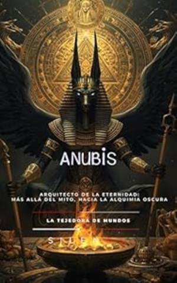
EgiptoANUBIS: ARQUITECTO DE LA ETERNIDAD: MÁS ALLÁ DEL MITO, HACIA LA ALQUIMIA OSCURA (EGIPTO)La Tejedora de Mundos (Silenos)EgiptoHATHOR: La Diosa de los Mil Rostros, entre el Éxtasis y la Furia (EGIPTO)La Tejedora de Mundos (Silenos)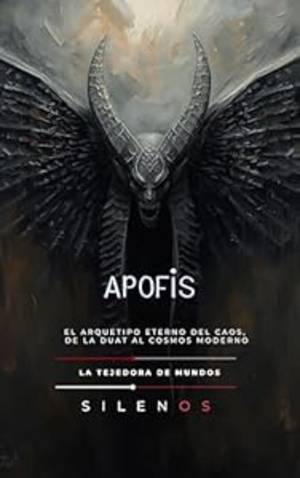
EgiptoAPOFIS: El Arquetipo Eterno del Caos, de la Duat al Cosmos Moderno (EGIPTO)La Tejedora de Mundos (Silenos)EgiptoTHOT: El Legado Eterno de Thot: Del Ibis a Hermes Trismegisto (EGIPTO)La Tejedora de Mundos (Silenos)EgiptoOSIRIS: El Rey Resucitado: Un Legado de Magia, Justicia y Eternidad Cíclica (EGIPTO)La Tejedora de Mundos (Silenos)EgiptoBASTET: La Paradoja de Bastet: De Leona Feroz a Arquetipo Equilibrado en el Corazón del Delta (EGIPTO)La Tejedora de Mundos (Silenos)EgiptoPTAH: El Arquitecto Silencioso: Del Logos Menfita al Gran Arquitecto del Universo (EGIPTO)La Tejedora de Mundos (Silenos)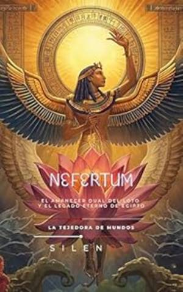
EgiptoNEFERTUM: El Amanecer Dual del Loto y el Legado Eterno de EgiptoLa Tejedora de Mundos (Silenos)EgiptoSOBEK: La Sombra Fértil del Nilo. Un Viaje de Dios Primordial a Deidad Cósmica y Arquetipo Eterno (EGIPTO)La Tejedora de Mundos (Silenos)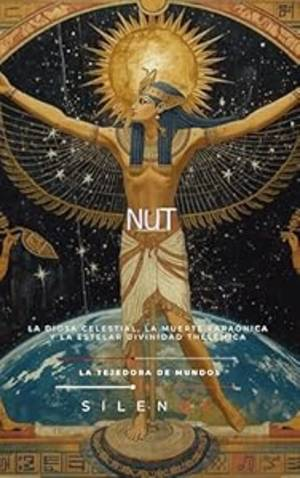
EgiptoNUT: De Nut a Nuit: La Diosa Celestial, la Muerte Faraónica y la Estelar Divinidad Thelémica (EGIPTO)La Tejedora de Mundos (Silenos)EgiptoGEB: El Padre Tierra, Guardián del Cosmos y la Realeza Egipcia (EGIPTO)La Tejedora de Mundos (Silenos)EgiptoSHU: Del Aliento Primordial al Vidente del Antropoceno (EGIPTO)La Tejedora de Mundos (Silenos)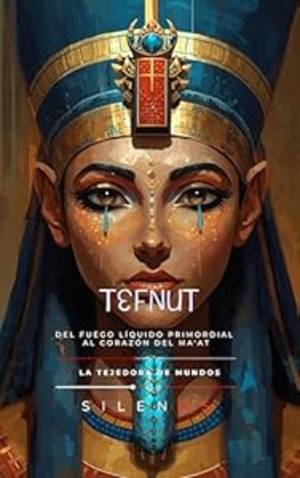
EgiptoTEFNUT: Del Fuego Líquido Primordial al Corazón del Ma'at (EGIPTO)La Tejedora de Mundos (Silenos)EgiptoNEFTIS: La Señora de los Umbrales, entre la Sombra y la Resurrección (EGIPTO)La Tejedora de Mundos (Silenos)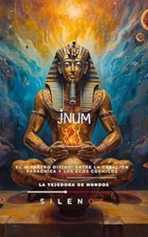
EgiptoJNUM: El Alfarero Divino, la Creación Faraónica y los Ecos Cósmicos (EGIPTO)La Tejedora de Mundos (Silenos)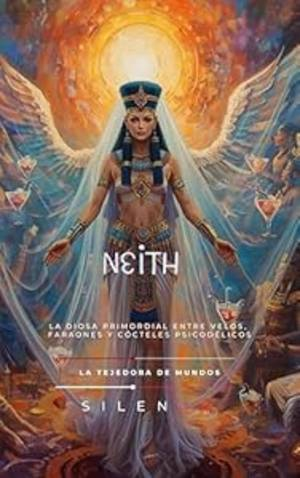
EgiptoNEITH: La Diosa Primordial entre Velos, Faraones y Cócteles Psicodélicos (EGIPTO)La Tejedora de Mundos (Silenos)EgiptoBES: El Dios Anómalo del Éxtasis y la Protección Universal (EGIPTO)La Tejedora de Mundos (Silenos)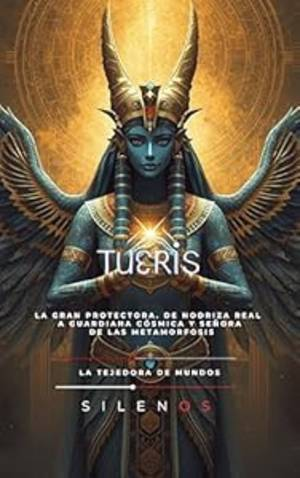
EgiptoTUERIS: La Gran Protectora. De Nodriza Real a Guardiana Cósmica y Señora de las Metamorfosis. (EGIPTO)La Tejedora de Mundos (Silenos)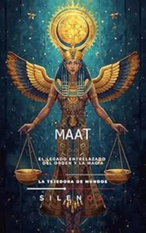
EgiptoMAAT: El Legado Entrelazado del Orden y la Magia (EGIPTO)La Tejedora de Mundos (Silenos)EgiptoHAPI: El Demiurgo Andrógino del Nilo: Ritual, Magia y el Legado Ambiental de EgiptoLa Tejedora de Mundos (Silenos)EgiptoAMMIT: La Sombra Quimérica: Psicoactivos, Magia y el Juicio de Ammit (EGIPTO)La Tejedora de Mundos (Silenos)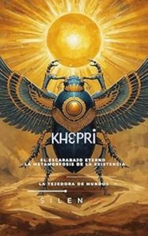
EgiptoKHEPRI: El Escarabajo Eterno y la Metamorfosis de la Existencia (EGIPTO)La Tejedora de Mundos (Silenos)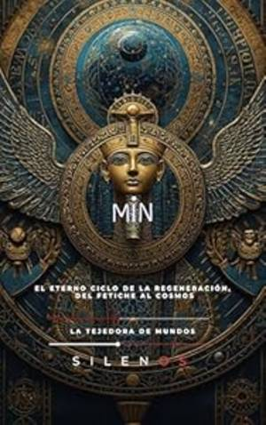
EgiptoMIN: El Eterno Ciclo de la Regeneración, del Fetiche al Cosmos (EGIPTO)La Tejedora de Mundos (Silenos)EgiptoHEKA: El Sistema Operativo Cósmico y el Legado de la Magia Egipcia en Occidente (EGIPTO)La Tejedora de Mundos (Silenos)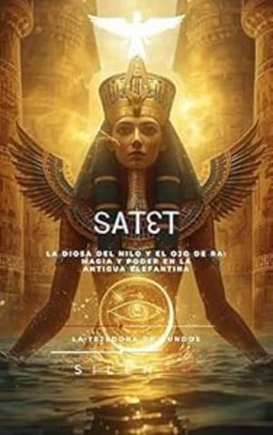
EgiptoSATET: El Despertar de Satet: El Flujo Eterno que Renueva EgiptoLa Tejedora de Mundos (Silenos)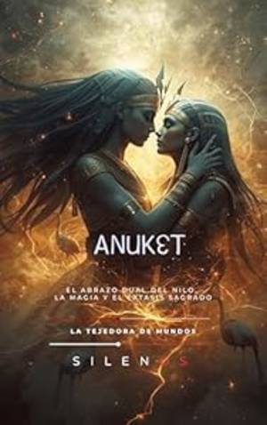
EgiptoANUKET: El Abrazo Dual del Nilo, la Magia y el Éxtasis Sagrado (EGIPTO)La Tejedora de Mundos (Silenos)EgiptoAKEN: El Barquero Soñoliento, Guardián del Tiempo y la Magia en el Inframundo Egipcio (EGIPTO)La Tejedora de Mundos (Silenos)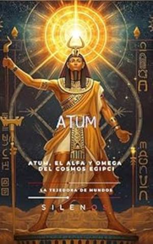
EgiptoATUM: El Alfa y Omega del Cosmos Egipcio (EGIPTO)La Tejedora de Mundos (Silenos)EgiptoBABI: La Evolución de un Arquetipo Primordial en el Antiguo EgiptoLa Tejedora de Mundos (Silenos)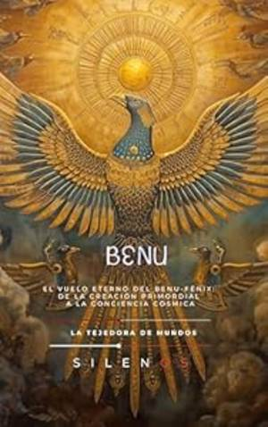
EgiptoBENU: El Vuelo Eterno del Benu-Fénix: De la Creación Primordial a la Conciencia Cósmica (EGIPTO)La Tejedora de Mundos (Silenos)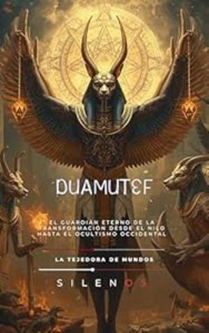
EgiptoDUAMUTEF: El Guardián Eterno de la Transformación desde el Nilo hasta el Ocultismo Occidental (EGIPTO)La Tejedora de Mundos (Silenos)EgiptoQEBEHSENUEF: El Halcón, el Héroe y el Pilar del Cosmos Egipcio (EGIPTO)La Tejedora de Mundos (Silenos)EgiptoIMSETY: El Genio Humano y el Secreto de la Alta Magia Egipcia (EGIPTO)La Tejedora de Mundos (Silenos)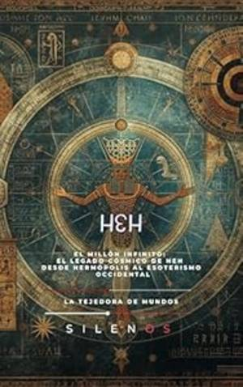
EgiptoHEH: El Millón Infinito: El Legado Cósmico de Heh desde Hermópolis al Esoterismo Occidental (EGIPTO)La Tejedora de Mundos (Silenos)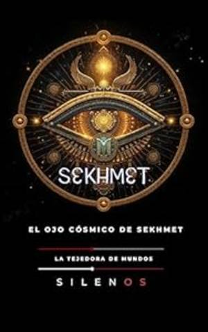
EgiptoSekhmet: El Ojo Cósmico de Sekhmet (EGIPTO)La Tejedora de Mundos (Silenos)EgiptoIHY: El Niño Divino del Éxtasis y la Transformación en el Antiguo EgiptoLa Tejedora de Mundos (Silenos)EgiptoKHONSU: El Guardian Lunar: De Exorcista a Maestro Onírico (EGIPTO)La Tejedora de Mundos (Silenos)EgiptoKEK: El Dios del Amanecer en el Abismo Primordial (EGIPTO)La Tejedora de Mundos (Silenos)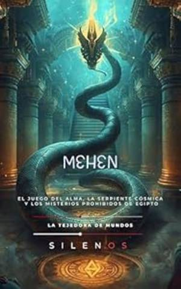
EgiptoMEHEN: El Juego del Alma, la Serpiente Cósmica y los Misterios Prohibidos de EgiptoLa Tejedora de Mundos (Silenos)EgiptoMENHIT: La Leona de Batalla (EGIPTO)La Tejedora de Mundos (Silenos)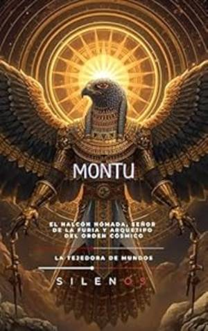
EgiptoMONTU: El Halcón Nómada, Señor de la Furia y Arquetipo del Orden Cósmico (EGIPTO)La Tejedora de Mundos (Silenos)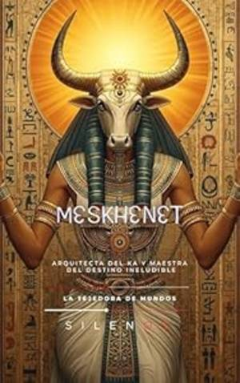
EgiptoMESKHENET: Arquitecta del Ka y Maestra del Destino Ineludible (EGIPTO)La Tejedora de Mundos (Silenos)EgiptoSETH: El Dios Paradójico, de Patrón Faraónico a Príncipe Oscuro Moderno (EGIPTO)La Tejedora de Mundos (Silenos)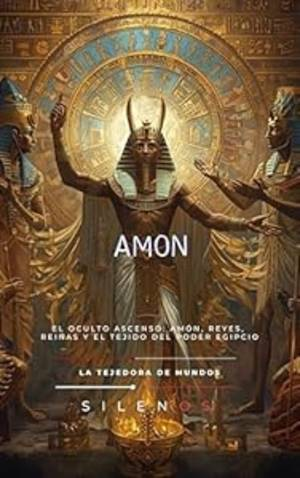
EgiptoAMÓN: El Oculto Ascenso: Amón, Reyes, Reinas y el Tejido del Poder Egipcio (EGIPTO)La Tejedora de Mundos (Silenos)EgiptoAKENATÓN: El Faraón de la Luz, su Revolución y el Enigma de un Olvido Eterno (EGIPTO)La Tejedora de Mundos (Silenos)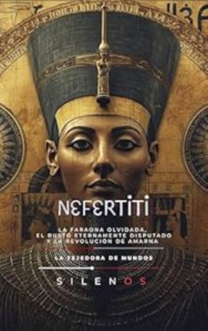
EgiptoNEFERTITI: La Faraona Olvidada, el Busto Eternamente Disputado y la Revolución de Amarna (EGIPTO)La Tejedora de Mundos (Silenos)EgiptoAmón-Ra-Ptah: La Arquitectura Divina y el Legado Mágico del Antiguo EgiptoLa Tejedora de Mundos (Silenos)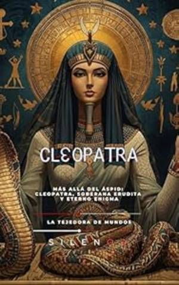
EgiptoCLEOPATRA: Más Allá del Áspid: Cleopatra, Soberana Erudita y Eterno Enigma (EGIPTO)La Tejedora de Mundos (Silenos)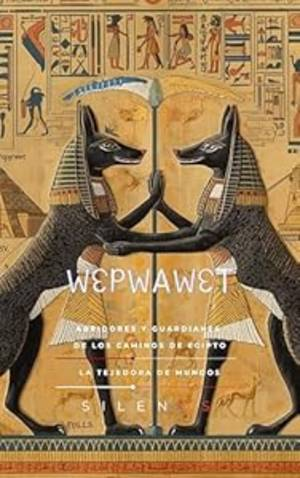
EgiptoWepwawet y Anubis: Abridores y Guardianes de los Caminos de EgiptoLa Tejedora de Mundos (Silenos)EgiptoASH: El Dios Liminal de la Dualidad, el Vino y la Gnosis Renacida (EGIPTO)La Tejedora de Mundos (Silenos)EgiptoNEKHBET: El Vuelo del Buitre, de Creadora Cósmica a Maestra de la Profecía en el Nilo (EGIPTO)La Tejedora de Mundos (Silenos) EgiptoRESJEF: El Dios de la Flecha, entre la Plaga y la Protección (EGIPTO)La Tejedora de Mundos (Silenos)EgiptoDJEHUTY: El Arquitecto del Cosmos, Maestro de la Magia y Heraldo de la Gnosis a Través de las Eras (EGIPTO)La Tejedora de Mundos (Silenos)EgiptoAMONET: La Sombra Primordial, Tatuajes Sagrados y Elixires de Gnosis en el Antiguo EgiptoLa Tejedora de Mundos (Silenos)EgiptoIPET: Regeneración Cósmica, Magia Terrenal y la Danza Eterna de Luxor (EGIPTO)La Tejedora de Mundos (Silenos)EgiptoSerqet: La Diosa Escorpión del Heka, el Veneno y la Vida Eterna (EGIPTO)La Tejedora de Mundos (Silenos)EgiptoKebechet: La Serpiente Celestial, Elixir y Psicostasia en el Antiguo EgiptoLa Tejedora de Mundos (Silenos)EgiptoHEQET: Del Parto Real al Renacimiento Cósmico (EGIPTO)La Tejedora de Mundos (Silenos)
EgiptoRESJEF: El Dios de la Flecha, entre la Plaga y la Protección (EGIPTO)La Tejedora de Mundos (Silenos)EgiptoDJEHUTY: El Arquitecto del Cosmos, Maestro de la Magia y Heraldo de la Gnosis a Través de las Eras (EGIPTO)La Tejedora de Mundos (Silenos)EgiptoAMONET: La Sombra Primordial, Tatuajes Sagrados y Elixires de Gnosis en el Antiguo EgiptoLa Tejedora de Mundos (Silenos)EgiptoIPET: Regeneración Cósmica, Magia Terrenal y la Danza Eterna de Luxor (EGIPTO)La Tejedora de Mundos (Silenos)EgiptoSerqet: La Diosa Escorpión del Heka, el Veneno y la Vida Eterna (EGIPTO)La Tejedora de Mundos (Silenos)EgiptoKebechet: La Serpiente Celestial, Elixir y Psicostasia en el Antiguo EgiptoLa Tejedora de Mundos (Silenos)EgiptoHEQET: Del Parto Real al Renacimiento Cósmico (EGIPTO)La Tejedora de Mundos (Silenos)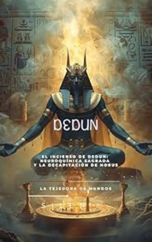
EgiptoDEDUN: El Incienso de Dedun: Neuroquímica Sagrada y la Decapitación de Horus (EGIPTO)La Tejedora de Mundos (Silenos)EgiptoHATMEHIT: La Diosa Pez del Delta, el Misterio de Osiris y la Fusión con Isis (EGIPTO)La Tejedora de Mundos (Silenos)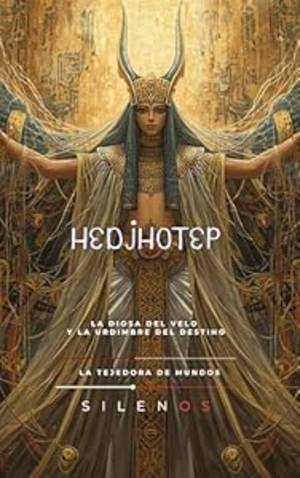
EgiptoHEDJHOTEP: La Diosa del Velo y la Urdimbre del Destino (EGIPTO)La Tejedora de Mundos (Silenos)EgiptoIAH: El Arquitecto Silencioso de la Luna, Forjador de Reinos y Misterios Esotéricos (EGIPTO)La Tejedora de Mundos (Silenos)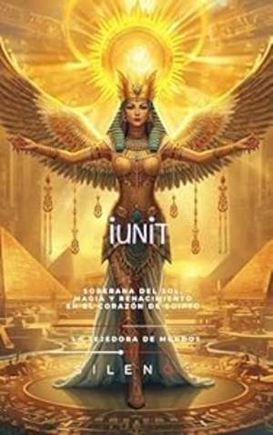
EgiptoIUNIT: Soberana del Sol, Magia y Renacimiento en el Corazón de EgiptoLa Tejedora de Mundos (Silenos)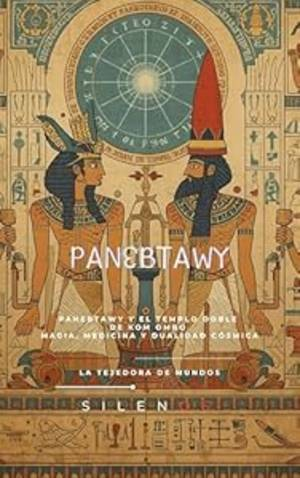
EgiptoPANEBTAWY: Panebtawy y el Templo Doble de Kom Ombo: Un Legado de Magia, Medicina y Dualidad Cósmica (EGIPTO)La Tejedora de Mundos (Silenos)EgiptoSHED: El Inquebrantable Viaje del Dios Salvador de Amarna al Guerrero Espiritual (EGIPTO)La Tejedora de Mundos (Silenos)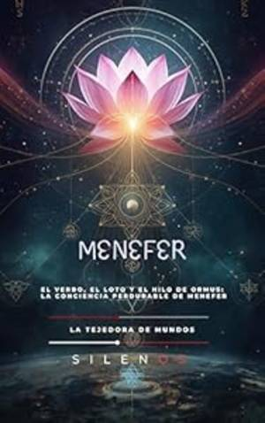
EgiptoMENEFER: El Verbo, el Loto y el Hilo de Ormus: La Conciencia Perdurable de Menefer (EGIPTO)La Tejedora de Mundos (Silenos)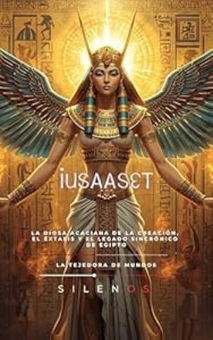
EgiptoIUSAASET: La Diosa Acaciana de la Creación, el Éxtasis y el Legado Sincrónico de EgiptoLa Tejedora de Mundos (Silenos)EgiptoWADJET: El Vaso de Bes y el Elixir del Ojo Vigilante: Desvelando la Farmacopea Divina (EGIPTO)La Tejedora de Mundos (Silenos)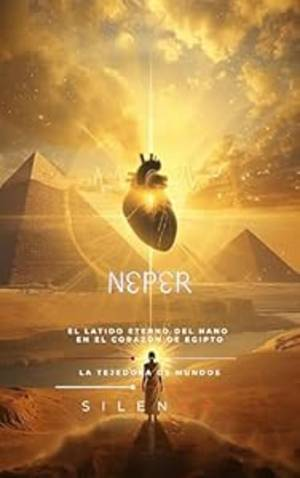
EgiptoNEPER: El Latido Eterno del Nano en el Corazón de EgiptoLa Tejedora de Mundos (Silenos)EgiptoSIA: La Conciencia Tejida Gnosis del Nilo y la Alquimia de la Percepción (EGIPTO)La Tejedora de Mundos (Silenos)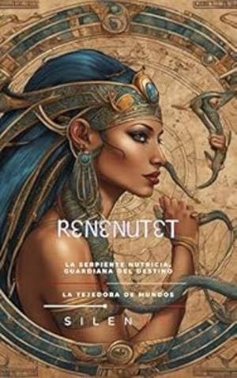
EgiptoRENENUTET: La Serpiente Nutricia, Guardiana del Destino y Tejedora de Mundos (EGIPTO)La Tejedora de Mundos (Silenos)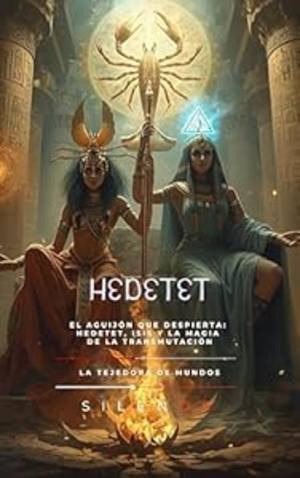
EgiptoHEDETET: El Aguijón que Despierta: Hedetet, Isis y la Magia de la Transmutación (EGIPTO)La Tejedora de Mundos (Silenos)EgiptoTAYET: La Tejedora de la Eternidad y los Misterios Alquímicos del Nilo (EGIPTO)La Tejedora de Mundos (Silenos)EgiptoMUT: La Matriz Primordial y el Éxtasis de la Diosa Leona en Tebas (EGIPTO)La Tejedora de Mundos (Silenos)EgiptoSOKAR: El Crisol Subterráneo de Giza (EGIPTO)La Tejedora de Mundos (Silenos)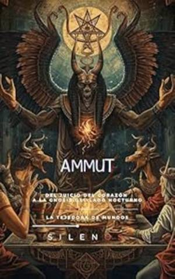
EgiptoAMMUT: Del Juicio del Corazón a la Gnosis del Lado Nocturno (EGIPTO)La Tejedora de Mundos (Silenos)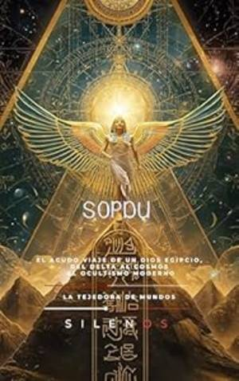
EgiptoSOPDU: El Agudo Viaje de un Dios Egipcio, del Delta al Cosmos y el Ocultismo Moderno (EGIPTO)La Tejedora de Mundos (Silenos)EgiptoRENPET: El Tapiz del Tiempo entre Magia, Deseo y Eterno Renacer de EgiptoLa Tejedora de Mundos (Silenos)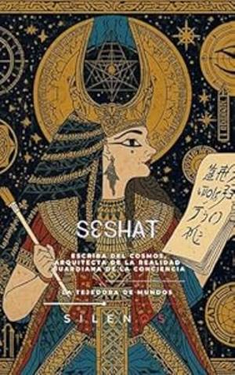
EgiptoSESHAT: Escriba del Cosmos, Arquitecta de la Realidad y Guardiana de la Conciencia (EGIPTO)La Tejedora de Mundos (Silenos)EgiptoKUK: La Sincronicidad del Caos Primordial en la Era Digital (EGIPTO)La Tejedora de Mundos (Silenos)EgiptoHAUHET: La Eterna Matriz: Un Viaje desde el Loto hasta el Vacío Cuántico (EGIPTO)La Tejedora de Mundos (Silenos)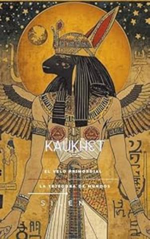
EgiptoKAUKHET: EL VELO PRIMORDIAL (EGIPTO)La Tejedora de Mundos (Silenos)EgiptoMAAHES: La Teología de la Masacre y la Farmacopea de la Redención (EGIPTO)La Tejedora de Mundos (Silenos)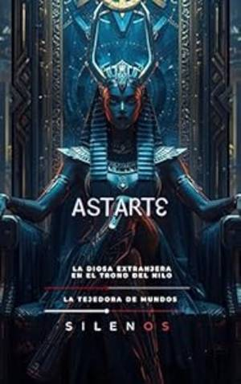
EgiptoASTARTE: La Diosa Extranjera en el Trono del Nilo (EGIPTO)La Tejedora de Mundos (Silenos)EgiptoHaurun: El Guardián del Umbral: Haurun y la Magia Oculta de los Faraones (EGIPTO)La Tejedora de Mundos (Silenos)EgiptoPakhet: La Leona del Umbral: Un viaje a la oscuridad de Pakhet (EGIPTO)La Tejedora de Mundos (Silenos)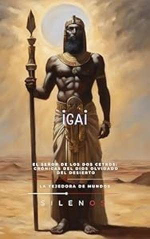
EgiptoIGAI: EL SEÑOR DE LOS DOS CETROS Crónicas del Dios Olvidado del Desierto (EGIPTO)La Tejedora de Mundos (Silenos)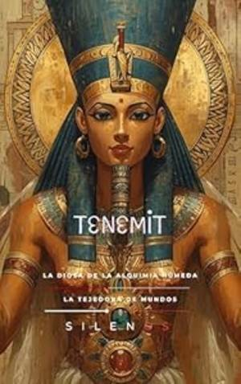
EgiptoTENEMIT: La Diosa de la Alquimia Húmeda (EGIPTO)La Tejedora de Mundos (Silenos)EgiptoSHEZMU: Sangre, Vino y Perfume: El Dios de la Prensa y la Alquimia Prohibida (Novela) (EGIPTO)La Tejedora de Mundos (Silenos)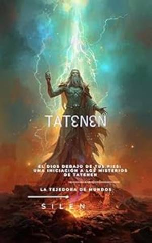
EgiptoTATENEM: El Dios Debajo de tus Pies: Una Iniciación a los Misterios de Tatenen (EGIPTO)La Tejedora de Mundos (Silenos)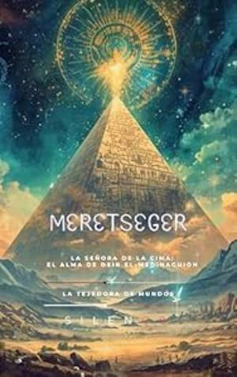
EgiptoMeretseger: La Señora de la Cima: Meretseger y el Alma de Deir el-MedinaGuion (EGIPTO)La Tejedora de Mundos (Silenos)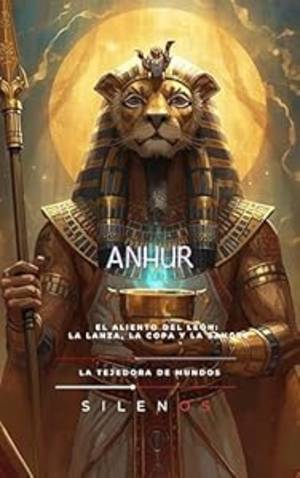
EgiptoANHUR: El Aliento del León: La Lanza, la Copa y la Sangre (EGIPTO)La Tejedora de Mundos (Silenos)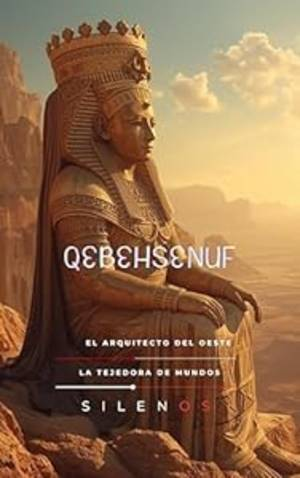
EgiptoQEBEHSENUF: EL ARQUITECTO DEL OESTE (EGIPTO)La Tejedora de Mundos (Silenos)EgiptoAM-HEH: El Devorador de Millones - La Arquitectura del Terror y la Alta Magia Funeraria (EGIPTO)La Tejedora de Mundos (Silenos)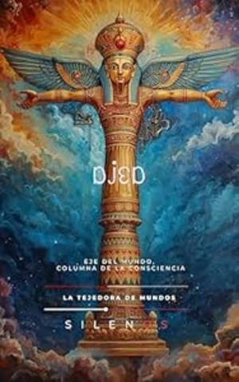
EgiptoDJED: Eje del Mundo, Columna de la Consciencia (EGIPTO)La Tejedora de Mundos (Silenos)EgiptoMEHIT: La Leona del Archivo – Recuperando a la Diosa (EGIPTO)La Tejedora de Mundos (Silenos)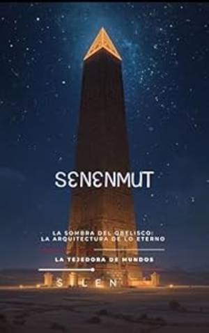
EgiptoSENENMUT: La Sombra del Obelisco: la Arquitectura de lo Eterno (EGIPTO)La Tejedora de Mundos (Silenos)Mitología GriegaSILENO: El Sabio Ebrio, Mistagogo de la Existencia y Espejo del Alma (Mitología Griega)La Tejedora de Mundos (Silenos)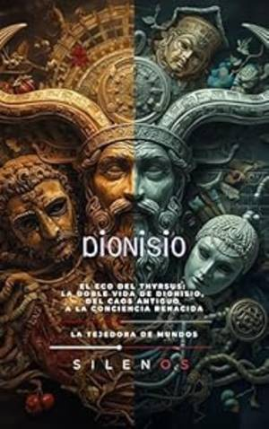
Mitología GriegaDionisio: El Eco del Thyrsus La Doble Vida de Dionisio, del Caos Antiguo a la Conciencia Renacida (Mitología Griega)La Tejedora de Mundos (Silenos)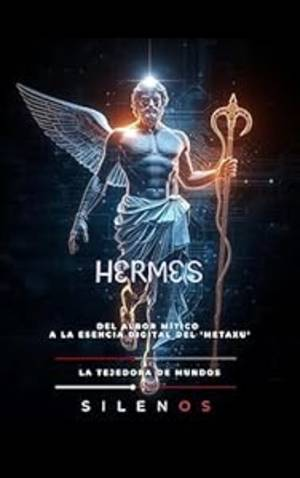
Mitología GriegaHERMES: Del Albor Mítico a la Esencia Digital del 'Metaxu' (Mitología Griega)La Tejedora de Mundos (Silenos)Mitología GriegaATLAS: Del Titán Cósmico al Pilar de la Conciencia Humana (Mitología Griega)La Tejedora de Mundos (Silenos)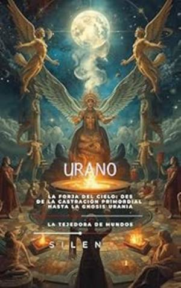
Mitología GriegaURANO: La Forja del Cielo: Desde la Castración Primordial hasta la Gnosis Urania (Mitología Griega)La Tejedora de Mundos (Silenos)Mitología GriegaGAIA: El Latido Primordial, De la Creación al Superorganismo Consciente (Mitología Griega)La Tejedora de Mundos (Silenos)Mitología GriegaCRONOS: El Tejedor de Tiempos, de la Edad de Oro al Sol Negro (Mitología Griega)La Tejedora de Mundos (Silenos)Mitología GriegaARIADNA: El Hilo del Laberinto y la Corona Estelar de la Diosa (Mitología Griega)La Tejedora de Mundos (Silenos)Mitología GriegaMETIS : La Astucia Primordial y el Tejido Oculto del Poder (Mitología Griega)La Tejedora de Mundos (Silenos)Mitología GriegaTETIS: Arquitecta del Flujo Cósmico y Guardiana de los Márgenes (Mitología Griega)La Tejedora de Mundos (Silenos)Mitología GriegaATENEA: La Sabiduría Mutante desde el Sol Minoico hasta el Cosmos Digital (Mitología Griega)La Tejedora de Mundos (Silenos)Mitología GriegaAFRODITA: El Veredicto de la Diosa Dorada (Mitología Griega)La Tejedora de Mundos (Silenos)Mitología GriegaHIPERIÓN: El Hieros Gamos de la Luz: Visiones Titánicas y la Alquimia de la Percepción (Mitología Griega)La Tejedora de Mundos (Silenos)Mitología GriegaREA: La Diosa del Flujo Perpetuo: Rea y los Secretos Sangrientos de la Gran Madre (Mitología Griega)La Tejedora de Mundos (Silenos)Mitología GriegaZEUS: El Dios de Mil Rostros, del Origen Cósmico al Altar Moderno (Mitología Griega)La Tejedora de Mundos (Silenos)Mitología GriegaHADES: El Arquetipo Invisible, de los Misterios Antiguos a la Sombra del Alma (Mitología Griega)La Tejedora de Mundos (Silenos)Mitología GriegaCERBERO: Un Arquetipo Trino a Través del Tiempo y el Cosmos Planteamiento General (Mitología Griega)La Tejedora de Mundos (Silenos)Mitología GriegaPERSÉFONE (KORE): La Soberana Dual del Inframundo, entre la Primavera y la Sombra Eterna (Mitología Griega)La Tejedora de Mundos (Silenos)Mitología GriegaORFEO: La Sombra del Cantor: Un Viaje Órfico a Través de las Eras (Mitología Griega)La Tejedora de Mundos (Silenos)Mitología GriegaPOSEIDON: De la Furia Elemental a la Sabiduría Ecosófica y los Secretos del Inconsciente Profundo (Mitología Griega)La Tejedora de Mundos (Silenos)Mitología GriegaORION: Vigor, Caída y Ascenso Celestial de un Arquetipo Atemporal (Mitología Griega)La Tejedora de Mundos (Silenos)Mitología GriegaMEDUSA: El Eco de un Mito entre Injusticia, Trauma y Resistencia Femenina (Mitología Griega)La Tejedora de Mundos (Silenos)Mitología GriegaAPOLO: La Eterna Sinfonía de Luz y Sombra en el Corazón del Mundo (Mitología Griega)La Tejedora de Mundos (Silenos)Mitología GriegaEURÍDICE: Musa, Misterio y Materia Ctonia - Un Viaje Multidisciplinar al Corazón del Mito Órfico (Mitología Griega)La Tejedora de Mundos (Silenos)Mitología GriegaTRITÓN: El Eco del Abismo, la Psique y la Conquista Humana (Mitología Griega)La Tejedora de Mundos (Silenos)Mitología GriegaULISES: El Viaje Infinito de Odiseo: Astucia, Magia y la Razón Instrumental (Mitología Griega)La Tejedora de Mundos (Silenos)Mitología GriegaKRATOS: De la Bestia del Olimpo al Fantasma de la Redención (Mitología Griega)La Tejedora de Mundos (Silenos)Mitología GriegaNÍOBE: El Lamento Petrificado y los Ecos de un Mito Eterno (Mitología Griega)La Tejedora de Mundos (Silenos)Mitología GriegaDEMETER: Arquetipo, Misterio y Poder. La Diosa de la Vida, la Muerte y la Conciencia Humana (Mitología Griega)La Tejedora de Mundos (Silenos)Mitología GriegaESTENO Y EURÍALE: Las Gorgonas Eternas Un Desvelar del Terror Sagrado y la Furia Primordial (Mitología Griega)La Tejedora de Mundos (Silenos)Mitología GriegaPROMETEO: El Titán de la Chispa Eterna (Mitología Griega)La Tejedora de Mundos (Silenos)Mitología GriegaJASON : El Navegante de las Estrellas: La Verdadera Ciencia tras el Mito de Jasón (Mitología Griega)La Tejedora de Mundos (Silenos)Mitología GriegaANTÍA: El Vuelo de la Reina Caída (Mitología Griega)La Tejedora de Mundos (Silenos)Mitología GriegaSÍSIFO: La Soberbia del Ingenio (Mitología Griega)La Tejedora de Mundos (Silenos)Mitología GriegaELECTRA: El Frío Abrazo (Mitología Griega)La Tejedora de Mundos (Silenos)Mitología GriegaAGAMENÓN: El Precio de la Gloria (Mitología Griega)La Tejedora de Mundos (Silenos)Mitología GriegaZELO: La Corona Incompleta (Mitología Griega)La Tejedora de Mundos (Silenos)Mitología GriegaIRIS: El Juramento de Iris (Mitología Griega)La Tejedora de Mundos (Silenos)Mitología GriegaNIKE: La Metamorfosis de la Victoria, de Diosa Ancestral a Hiper-Sigilo Global (Mitología Griega)La Tejedora de Mundos (Silenos)Mitología GriegaNEREO: La Verdad del Océano (Mitología Griega)La Tejedora de Mundos (Silenos)Mitología GriegaPALAS: El Legado de la Lanza y el Nombre (Mitología Griega)La Tejedora de Mundos (Silenos)Mitología GriegaTAUMANTE: El Arquetipo de la Maravilla, el Terror y el AbismoV (Mitología Griega)La Tejedora de Mundos (Silenos)Mitología GriegaTESEO: El Laberinto del Héroe (Mitología Griega)La Tejedora de Mundos (Silenos)Mitología GriegaLAS NEREIDAS: La Memoria de las Olas (Mitología Griega)La Tejedora de Mundos (Silenos)Mitología GriegaBÍA: La Memoria de las Olas (Mitología Griega)La Tejedora de Mundos (Silenos)Mitología GriegaÍCARO: Alas de Cera: La Tragedia de Ícaro (Mitología Griega)La Tejedora de Mundos (Silenos)Mitología GriegaDÉDALO: El Legado de Dédalo: Ingenio y Tragedia (Mitología Griega)La Tejedora de Mundos (Silenos)Mitología GriegaAQUILES: La Furia y el Talón (Mitología Griega)La Tejedora de Mundos (Silenos)Mitología GriegaDORIS: Doris y el Silencio del Mar (Mitología Griega)La Tejedora de Mundos (Silenos)Mitología GriegaAMPHITRITE: La Corona de los Mares (Mitología Griega)La Tejedora de Mundos (Silenos)Mitología GriegaESTIGIA: El Pacto Profano (Mitología Griega)La Tejedora de Mundos (Silenos)Mitología GriegaREY MIDAS: La Maldición del Oro y el Castigo Divino (Mitología Griega)La Tejedora de Mundos (Silenos)Mitología GriegaNAUCRATES: El Juramento del Timón Dorado (Mitología Griega)La Tejedora de Mundos (Silenos)Mitología GriegaGALATEA: Ecos de un Amor Inmortal (Mitología Griega)La Tejedora de Mundos (Silenos)Mitología GriegaPONTOMEDUSA: La Reina Sin Reino (Mitología Griega)La Tejedora de Mundos (Silenos)Mitología GriegaMELITE: La Guardiana del Amanecer Dorado (Mitología Griega)La Tejedora de Mundos (Silenos)Mitología GriegaACIS: El pastor que se hizo río por amor (Mitología Griega)La Tejedora de Mundos (Silenos)Mitología GriegaOCÉANO: El Río que Abraza el Mundo (Mitología Griega)La Tejedora de Mundos (Silenos)Mitología GriegaHELIOS: El Ojo Brillante del Cielo y el Testigo Universal (Mitología Griega)La Tejedora de Mundos (Silenos)Mitología GriegaSELENE: La Vigilia Eterna de Selene (Mitología Griega)La Tejedora de Mundos (Silenos)Mitología GriegaTELÉMACO: El Legado del Héroe Ausente (Mitología Griega)La Tejedora de Mundos (Silenos)Mitología GriegaAUTÓLICO: El Legado del Engaño (Mitología Griega)La Tejedora de Mundos (Silenos)Mitología GriegaENDIMIÓN: La Joya Oculta del Látmos (Mitología Griega)La Tejedora de Mundos (Silenos)Mitología GriegaPENÉLOPE: La Reina que Tejía la Espera (Mitología Griega)La Tejedora de Mundos (Silenos)Mitología GriegaBELEROFONTE: Alas de Gloria, Corazón de Polvo (Mitología Griega)La Tejedora de Mundos (Silenos)Mitología GriegaPEGASO: De la Sangre al Firmamento: El Ascenso de Pegaso (Mitología Griega)La Tejedora de Mundos (Silenos)Mitología GriegaMEDEA: Sangre de Sol, Furia de Mujer (Mitología Griega)La Tejedora de Mundos (Silenos)Mitología GriegaMINOS: La Corona y el Laberinto: El Juicio de Minos (Mitología Griega)La Tejedora de Mundos (Silenos)Mitología GriegaHIPNOS: La Sombra de la Discordia (Mitología Griega)La Tejedora de Mundos (Silenos)Mitología GriegaCÁLICE: LA RISA DE LA NOCHE El viaje oculto de Cálice, de princesa eolia a ménade furiosa (Mitología Griega)La Tejedora de Mundos (Silenos)Mitología GriegaNIX: La Progenie de la Noche (Mitología Griega)La Tejedora de Mundos (Silenos)Mitología GriegaHIPNOS: El Dios de los Ojos Abiertos: Un viaje al reino de Hypnos (Mitología Griega)La Tejedora de Mundos (Silenos)Mitología GriegaAETLIO: El Primer Atleta - El Origen del Esfuerzo Humano (Mitología Griega)La Tejedora de Mundos (Silenos)Mitología GriegaCALIPSO: La Diosa del Velo: Descifrando el Misterio de Calipso (Mitología Griega)La Tejedora de Mundos (Silenos)Mitología GriegaTÁNATOS: El Abrazo de la Noche: Biografía de Tánatos, de Dios a Pulsión (Mitología Griega)La Tejedora de Mundos (Silenos)Mitología GriegaGERAS: Lo que la Fuerza no Puede Doblegar (Mitología Griega)La Tejedora de Mundos (Silenos)Mitología GriegaMOMOS: El Dios Incómodo: Momo y el Arte de la Verdad Peligrosa (Mitología Griega)La Tejedora de Mundos (Silenos)Mitología GriegaNÉMESIS: De la Noche Primordial al Juicio de Gaia (Mitología Griega)La Tejedora de Mundos (Silenos)Mitología GriegaOIZYS: La Lágrima de la Noche (Mitología Griega)La Tejedora de Mundos (Silenos)Mitología GriegaPHILOTES: La Fisura en la Llama (Mitología Griega)La Tejedora de Mundos (Silenos)Mitología GriegaCIRCE: La Hechicera de la Estirpe del Sol (Mitología Griega)La Tejedora de Mundos (Silenos)Mitología GriegaERIS: El legado de la Discordia (Mitología Griega)La Tejedora de Mundos (Silenos)Mitología GriegaONEIROS: El Guardián de la Puerta de Cuerno (Mitología Griega)La Tejedora de Mundos (Silenos)Mitología GriegaMORFEO: El Modelador de Sueños (Mitología Griega)La Tejedora de Mundos (Silenos)Mitología GriegaFOBÉTOR: La Sombra de la Bestia Interior (Mitología Griega)La Tejedora de Mundos (Silenos)Mitología GriegaMAYA: La Estrella Oculta que Alumbró a un Dios (Mitología Griega)La Tejedora de Mundos (Silenos)Mitología GriegaFANTASO: El Arquitecto de Quimeras (Mitología Griega)La Tejedora de Mundos (Silenos)Mitología GriegaTEA: La Luz Primordial del Cosmos (Mitología Griega)La Tejedora de Mundos (Silenos)Mitología GriegaEOS: La Aurora Eterna: Luz, Pasión y el Eco de Amores Perdidos (Mitología Griega)La Tejedora de Mundos (Silenos)Mitología GriegaAPATE: El Engaño Primordial Desatado (Mitología Griega)La Tejedora de Mundos (Silenos)Mitología GriegaEREBO: El Abismo Que Engendró la Luz y Acunó el Inframundo (Mitología Griega)La Tejedora de Mundos (Silenos)Mitología GriegaEURUS: El Aliento Inestable del Este (Mitología Griega)La Tejedora de Mundos (Silenos)Mitología GriegaULISES: La Odisea del Ingenio y el Regreso al Hogar (Mitología Griega)La Tejedora de Mundos (Silenos)Mitología GriegaHELENA DE TROYA: La Belleza que Desató la Guerra (Mitología Griega)La Tejedora de Mundos (Silenos)Mitología GriegaPALÁMEDES: La Sabiduría Traicionada en Troya (Mitología Griega)La Tejedora de Mundos (Silenos) Mitología GriegaClímene: La Oceánide y la Consorte Solar, Madre de Mundos y Tragedias (Mitología Griega)La Tejedora de Mundos (Silenos)Mitología GriegaFAETÓN: Faetón y el Carro del Sol: La Ambición Desmedida (Mitología Griega)La Tejedora de Mundos (Silenos)Mitología GriegaEETES: Eetes, el Vellocino y la Sangrienta Traición de la Cólquide (Mitología Griega)La Tejedora de Mundos (Silenos)Mitología GriegaAFRODITA: La Diosa de la Dualidad, el Amor y el Destino (Mitología Griega)La Tejedora de Mundos (Silenos)Mitología GriegaARTEMISA: La Reina Salvaje de los Umbrales (Mitología Griega)La Tejedora de Mundos (Silenos)Mitología GriegaHESTIA: EL FUEGO INAMOVIBLE : La Soberanía del Centro en la Antigüedad y el Pensamiento Contemporáneo (Mitología Griega)La Tejedora de Mundos (Silenos)
Mitología GriegaClímene: La Oceánide y la Consorte Solar, Madre de Mundos y Tragedias (Mitología Griega)La Tejedora de Mundos (Silenos)Mitología GriegaFAETÓN: Faetón y el Carro del Sol: La Ambición Desmedida (Mitología Griega)La Tejedora de Mundos (Silenos)Mitología GriegaEETES: Eetes, el Vellocino y la Sangrienta Traición de la Cólquide (Mitología Griega)La Tejedora de Mundos (Silenos)Mitología GriegaAFRODITA: La Diosa de la Dualidad, el Amor y el Destino (Mitología Griega)La Tejedora de Mundos (Silenos)Mitología GriegaARTEMISA: La Reina Salvaje de los Umbrales (Mitología Griega)La Tejedora de Mundos (Silenos)Mitología GriegaHESTIA: EL FUEGO INAMOVIBLE : La Soberanía del Centro en la Antigüedad y el Pensamiento Contemporáneo (Mitología Griega)La Tejedora de Mundos (Silenos) Mitología GriegaATLANTIS : El Legado de los Atla-Ra: La Trama Oculta de la Historia de la Atlántida. (Mitología Griega)La Tejedora de Mundos (Silenos)HermetismoEL ELYON : De la arcilla al algoritmo: Un análisis sobre la evolución de la raíz ʔil- y la tecnificación de lo sagrado como herramienta de poder político y social. (HERMETISMO nº 2)La Tejedora de Mundos (Silenos)HermetismoBARBELO : El Silencio, la Emanación y la Vigencia de lo Sagrado (HERMETISMO nº 3)La Tejedora de Mundos (Silenos)HermetismoPICATRIX : Las esferas del sentido: De la penumbra de Roma al Continente de Sapkowski (HERMETISMO nº 4)La Tejedora de Mundos (Silenos)HermetismoSHAMBHALA : La Utopía de la Tierra sin Males (HERMETISMO nº 6)La Tejedora de Mundos (Silenos)HermetismoWICCA : El Despertar de la Verdad en Tamriel (HERMETISMO nº 7)La Tejedora de Mundos (Silenos)HermetismoEL CÓDIGO TRISMEGISTO : De la Piedra de Rosetta a la Pantalla Cuántica (HERMETISMO nº 8)La Tejedora de Mundos (Silenos)
Mitología GriegaATLANTIS : El Legado de los Atla-Ra: La Trama Oculta de la Historia de la Atlántida. (Mitología Griega)La Tejedora de Mundos (Silenos)HermetismoEL ELYON : De la arcilla al algoritmo: Un análisis sobre la evolución de la raíz ʔil- y la tecnificación de lo sagrado como herramienta de poder político y social. (HERMETISMO nº 2)La Tejedora de Mundos (Silenos)HermetismoBARBELO : El Silencio, la Emanación y la Vigencia de lo Sagrado (HERMETISMO nº 3)La Tejedora de Mundos (Silenos)HermetismoPICATRIX : Las esferas del sentido: De la penumbra de Roma al Continente de Sapkowski (HERMETISMO nº 4)La Tejedora de Mundos (Silenos)HermetismoSHAMBHALA : La Utopía de la Tierra sin Males (HERMETISMO nº 6)La Tejedora de Mundos (Silenos)HermetismoWICCA : El Despertar de la Verdad en Tamriel (HERMETISMO nº 7)La Tejedora de Mundos (Silenos)HermetismoEL CÓDIGO TRISMEGISTO : De la Piedra de Rosetta a la Pantalla Cuántica (HERMETISMO nº 8)La Tejedora de Mundos (Silenos) IlluminatiEL OJO DE HORUS: Clave del Paisaje y la MemoriaCristina Lobo y Manuel Rodsua
IlluminatiEL OJO DE HORUS: Clave del Paisaje y la MemoriaCristina Lobo y Manuel Rodsua IlluminatiNOVUS ORDO SECLORUM : Memoria de Carne y Testigos de SilicioCristina Lobo y Manuel Rodsua
IlluminatiNOVUS ORDO SECLORUM : Memoria de Carne y Testigos de SilicioCristina Lobo y Manuel Rodsua IlluminatiMK ULTRA : El archivo del secreto y la concienciaCristina Lobo y Manuel RodsuaIlluminatiHOLLYWOOD OCULTO : Cine, Inteligencia y Sociedades SecretasCristina Lobo y Manuel Rodsua
IlluminatiMK ULTRA : El archivo del secreto y la concienciaCristina Lobo y Manuel RodsuaIlluminatiHOLLYWOOD OCULTO : Cine, Inteligencia y Sociedades SecretasCristina Lobo y Manuel Rodsua IlluminatiEL ARCA DE LA ALIANZA : Poder, Tecnología y Alta MagiaCristina Lobo y Manuel RodsuaIlluminatiBLUEBEAM : EL SISMÓGRAFO ESPIRITUAL DE SERGE MONAST Y LA CRÓNICA DEL MIEDO MODERNOCristina Lobo y Manuel RodsuaIlluminatiANATOMÍA DEL SECRETO : Élites, legados y el deber de la memoriaCristina Lobo & Manuel RodsuaIlluminatiLOS TÚNELES DE REALIDAD : La Ciencia del Tal VezCristina Lobo y Manuel Rodsua
IlluminatiEL ARCA DE LA ALIANZA : Poder, Tecnología y Alta MagiaCristina Lobo y Manuel RodsuaIlluminatiBLUEBEAM : EL SISMÓGRAFO ESPIRITUAL DE SERGE MONAST Y LA CRÓNICA DEL MIEDO MODERNOCristina Lobo y Manuel RodsuaIlluminatiANATOMÍA DEL SECRETO : Élites, legados y el deber de la memoriaCristina Lobo & Manuel RodsuaIlluminatiLOS TÚNELES DE REALIDAD : La Ciencia del Tal VezCristina Lobo y Manuel Rodsua IlluminatiEL NEGOCIO DE LA MAGIA: Poder, contratos y ética en la industria musicalCristina Lobo y Manuel RodsuaIlluminatiALHANDALUS : El Archivo de la Mesa de SalomónCristina Lobo y Manuel Rodsua
IlluminatiEL NEGOCIO DE LA MAGIA: Poder, contratos y ética en la industria musicalCristina Lobo y Manuel RodsuaIlluminatiALHANDALUS : El Archivo de la Mesa de SalomónCristina Lobo y Manuel Rodsua IlluminatiCERN : VAGANDO POR LO INCONMENSURABLECristina Lobo y Manuel Rodsua
IlluminatiCERN : VAGANDO POR LO INCONMENSURABLECristina Lobo y Manuel Rodsua IlluminatiEL CÓDIGO DE INGOLSTADT : La Maquinaria de la Perfección HumanaCristina Lobo y Manuel Rodsua
IlluminatiEL CÓDIGO DE INGOLSTADT : La Maquinaria de la Perfección HumanaCristina Lobo y Manuel Rodsua IlluminatiLA CARRERA ESPACIAL SECRETA : Arquitecturas de la opacidad y la custodia de lo realCristina Lobo y Manuel Rodsua
IlluminatiLA CARRERA ESPACIAL SECRETA : Arquitecturas de la opacidad y la custodia de lo realCristina Lobo y Manuel Rodsua IlluminatiSOMBRAS DE PODER : Guerra Fría, Operaciones de Bandera Falsa y la Ingeniería del MiedoCristina Lobo y Manuel RodsuaIlluminatiVATICANO E ILLUMINTI : La Guerra Esotérica por la Silla de PedroCristina Lobo y Manuel RodsuaIlluminatiPHARMAKEIA : El Monopolio Médico y sus Raíces EsotéricasCristina Lobo y Manuel Rodsua
IlluminatiSOMBRAS DE PODER : Guerra Fría, Operaciones de Bandera Falsa y la Ingeniería del MiedoCristina Lobo y Manuel RodsuaIlluminatiVATICANO E ILLUMINTI : La Guerra Esotérica por la Silla de PedroCristina Lobo y Manuel RodsuaIlluminatiPHARMAKEIA : El Monopolio Médico y sus Raíces EsotéricasCristina Lobo y Manuel Rodsua IlluminatiARQUITECTURA DEL PODER INVISIBLE : Cronología del Dinero y lo OcultoCristina Lobo y Manuel Rodsua
IlluminatiARQUITECTURA DEL PODER INVISIBLE : Cronología del Dinero y lo OcultoCristina Lobo y Manuel Rodsua IlluminatiALQUIMIA OCULTA : La Caída de los Imperios: Alta Magia, Sociedades Secretas y el Colapso de los TronosCristina Lobo y Manuel RodsuaIlluminatiLA PUERTA DE LAS ROCOSAS : Poder, Símbolo y Transparencia en el Horizonte de DenverCristina Lobo y Manuel Rodsua
IlluminatiALQUIMIA OCULTA : La Caída de los Imperios: Alta Magia, Sociedades Secretas y el Colapso de los TronosCristina Lobo y Manuel RodsuaIlluminatiLA PUERTA DE LAS ROCOSAS : Poder, Símbolo y Transparencia en el Horizonte de DenverCristina Lobo y Manuel Rodsua IlluminatiEL CÓDIGO DA VINCI : El Legado de SaunièreCristina Lobo y Manuel Rodsua
IlluminatiEL CÓDIGO DA VINCI : El Legado de SaunièreCristina Lobo y Manuel Rodsua IlluminatiEL CÓDIGO DEMIÚRGICO : Arquitectura Esotérica de la Era DigitalCristina Lobo y Manuel RodsuaIlluminatiEL CAMINO DE LA MANO IZQUIERDA : Filosofías de auto-deificación frente a la sumisión religiosa tradicionalCristina Lobo y Manuel Rodsua
IlluminatiEL CÓDIGO DEMIÚRGICO : Arquitectura Esotérica de la Era DigitalCristina Lobo y Manuel RodsuaIlluminatiEL CAMINO DE LA MANO IZQUIERDA : Filosofías de auto-deificación frente a la sumisión religiosa tradicionalCristina Lobo y Manuel Rodsua IlluminatiRITUALES DE LUNA LLENA : El calendario lunar en las decisiones de la banca y la política internacionalCristina Lobo y Manuel Rodsua
IlluminatiRITUALES DE LUNA LLENA : El calendario lunar en las decisiones de la banca y la política internacionalCristina Lobo y Manuel Rodsua IlluminatiEL ENIGMA DE SAINT GERMAIN : El Arquitecto Inmortal de las SombrasCristina Lobo y Manuel Rodsua
IlluminatiEL ENIGMA DE SAINT GERMAIN : El Arquitecto Inmortal de las SombrasCristina Lobo y Manuel Rodsua IlluminatiEL PESO DEL OLVIDO : Una Historia Integral de la Damnatio MemoriaeCristina Lobo y Manuel RodsuaIlluminatiHIRAM ABIFF : El Arquitecto del Fuego y la Palabra PerdidaCristina Lobo y Manuel RodsuaIlluminatiCRIPTOGRAFIA Y LENGUAJE OCULTO : El Poder de los IlluminatiCristina Lobo y Manuel Rodsua
IlluminatiEL PESO DEL OLVIDO : Una Historia Integral de la Damnatio MemoriaeCristina Lobo y Manuel RodsuaIlluminatiHIRAM ABIFF : El Arquitecto del Fuego y la Palabra PerdidaCristina Lobo y Manuel RodsuaIlluminatiCRIPTOGRAFIA Y LENGUAJE OCULTO : El Poder de los IlluminatiCristina Lobo y Manuel Rodsua IlluminatiCOMPLEJO MILITAR INDUSTRIAL : El círculo infinito de guerra y reconstrucción que alimenta la economía de éliteCristina Lobo y Manuel Rodsua
IlluminatiCOMPLEJO MILITAR INDUSTRIAL : El círculo infinito de guerra y reconstrucción que alimenta la economía de éliteCristina Lobo y Manuel Rodsua IlluminatiLOS SOBERANOS DEL ACTIVO : La Tecno-Teocracia de BlackRock y Vanguard
IlluminatiLOS SOBERANOS DEL ACTIVO : La Tecno-Teocracia de BlackRock y Vanguard IlluminatiSILICON VALLEY Y EL NUEVO SACERDOCIO : Los Magnates Tecnológicos como los Nuevos 'Iluminados' del Siglo XXICristina Lobo y Manuel Rodsua
IlluminatiSILICON VALLEY Y EL NUEVO SACERDOCIO : Los Magnates Tecnológicos como los Nuevos 'Iluminados' del Siglo XXICristina Lobo y Manuel Rodsua IlluminatiEL ANDAMIAJE CELESTE: Astrología Esotérica y las Sombras del PoderCristina Lobo y Manuel Rodsua
IlluminatiEL ANDAMIAJE CELESTE: Astrología Esotérica y las Sombras del PoderCristina Lobo y Manuel Rodsua IlluminatiEL OJO QUE NO DUERME : Genealogía del Control y sus DisidenciasCristina Lobo y Manuel Rodsua
IlluminatiEL OJO QUE NO DUERME : Genealogía del Control y sus DisidenciasCristina Lobo y Manuel Rodsua IlluminatiFRECUENCIA 33 : El Sistema Operativo de la Conciencia y el PoderCristina Lobo y Manuel Rodsua
IlluminatiFRECUENCIA 33 : El Sistema Operativo de la Conciencia y el PoderCristina Lobo y Manuel Rodsua IlluminatiNIKOLA TESLA : El Éter y el Ojo del Control Global: El Prometheus Eléctrico y la Geometría de la SupresiónCristina Lobo y Manuel RodsuaIlluminatiDADAÍSMO Y CAOS : La Ingeniería Oculta de la Psique ColectivaCristina Lobo y Manuel Rodsua
IlluminatiNIKOLA TESLA : El Éter y el Ojo del Control Global: El Prometheus Eléctrico y la Geometría de la SupresiónCristina Lobo y Manuel RodsuaIlluminatiDADAÍSMO Y CAOS : La Ingeniería Oculta de la Psique ColectivaCristina Lobo y Manuel Rodsua IlluminatiZOROASTRISMO Y DUALISMO : La eterna lucha entre la luz y la oscuridadCristina Lobo y Manuel Rodsua
IlluminatiZOROASTRISMO Y DUALISMO : La eterna lucha entre la luz y la oscuridadCristina Lobo y Manuel Rodsua IlluminatiHEGEL Arquitectura de la Síntesis: Dialéctica Hegeliana y Control SocialCristina Lobo y Manuel Rodsua
IlluminatiHEGEL Arquitectura de la Síntesis: Dialéctica Hegeliana y Control SocialCristina Lobo y Manuel Rodsua IlluminatiEL CÓDIGO DE LAS ÉLITES : Hermenéutica del poder y ritualesCristina Lobo y Manuel RodsuaIlluminatiLA MODA COMO RITUAL: Simbolismo de pasarela y la deshumanización del cuerpo en la alta costuraCristina Lobo y Manuel RodsuaIlluminatiEL IDIOMA DE LOS PÁJAROS: Hermenéutica Alquímica, Cábala Fonética Historia Secreta del ConocimientoCristina Lobo y Manuel Rodsua
IlluminatiEL CÓDIGO DE LAS ÉLITES : Hermenéutica del poder y ritualesCristina Lobo y Manuel RodsuaIlluminatiLA MODA COMO RITUAL: Simbolismo de pasarela y la deshumanización del cuerpo en la alta costuraCristina Lobo y Manuel RodsuaIlluminatiEL IDIOMA DE LOS PÁJAROS: Hermenéutica Alquímica, Cábala Fonética Historia Secreta del ConocimientoCristina Lobo y Manuel Rodsua IlluminatiMEDITACIÓN : Como Guerrilla Mental: Soberanía para invalidar el control externoCristina Lobo y Manuel RodsuaIlluminatiSINFONÍA PARA UN MUNDO ROTO: El Arquitecto del Caos y el DiscordianismoCristina Lobo y Manuel Rodsua
IlluminatiMEDITACIÓN : Como Guerrilla Mental: Soberanía para invalidar el control externoCristina Lobo y Manuel RodsuaIlluminatiSINFONÍA PARA UN MUNDO ROTO: El Arquitecto del Caos y el DiscordianismoCristina Lobo y Manuel Rodsua IlluminatiEl Paradigma de Iron Mountain: Anatomía del Engaño y Control Global
IlluminatiEl Paradigma de Iron Mountain: Anatomía del Engaño y Control Global IlluminatiOPERATION MINDFUCK: Arquitectura del Caos y el Legado de la DiscordiaCristina Lobo y Manuel Rodsua
IlluminatiOPERATION MINDFUCK: Arquitectura del Caos y el Legado de la DiscordiaCristina Lobo y Manuel Rodsua IlluminatiEl Concilio de Nicea: La Gran Edición del Conocimiento EspiritualCristina Lobo y Manuel RodsuaIlluminatiLa Quinta Dimensión: El Colapso del Control Illuminati y la Trascendencia de la ConcienciaCristina Lobo y Manuel RodsuaIlluminatiLa Singularidad y la Fusión de la Élite: Crónica de la Ascensión Digital y el Ocultismo TecnológicoCristina Lobo y Manuel Rodsua
IlluminatiEl Concilio de Nicea: La Gran Edición del Conocimiento EspiritualCristina Lobo y Manuel RodsuaIlluminatiLa Quinta Dimensión: El Colapso del Control Illuminati y la Trascendencia de la ConcienciaCristina Lobo y Manuel RodsuaIlluminatiLa Singularidad y la Fusión de la Élite: Crónica de la Ascensión Digital y el Ocultismo TecnológicoCristina Lobo y Manuel Rodsua IlluminatiEL EFECTO MANDELA: ¿Manipulación de la realidad o saltos entre dimensiones?Cristina Lobo y Manuel Rodsua
IlluminatiEL EFECTO MANDELA: ¿Manipulación de la realidad o saltos entre dimensiones?Cristina Lobo y Manuel Rodsua IlluminatiEL AMANECER DEL AGUADOR: Historia Exhaustiva, Geopolítica y Esoterismo de la Era de AcuarioCristina Lobo y Manuel Rodsua
IlluminatiEL AMANECER DEL AGUADOR: Historia Exhaustiva, Geopolítica y Esoterismo de la Era de AcuarioCristina Lobo y Manuel Rodsua IlluminatiASTANA: Arquitectura Esotérica y el Nuevo Orden MundialCristina Lobo y Manuel Rodsua
IlluminatiASTANA: Arquitectura Esotérica y el Nuevo Orden MundialCristina Lobo y Manuel Rodsua IlluminatiARQUITECTURA DE LAS SOMBRAS : El uso de la proporción áurea en edificios gubernamentales modernosCristina Lobo y Manuel Rodsua
IlluminatiARQUITECTURA DE LAS SOMBRAS : El uso de la proporción áurea en edificios gubernamentales modernosCristina Lobo y Manuel Rodsua IlluminatiLA BIBLIOTECA DEL VATICANO: Secretos y Sombras del Archivo ApostólicoCristina Lobo y Manuel Rodsua
IlluminatiLA BIBLIOTECA DEL VATICANO: Secretos y Sombras del Archivo ApostólicoCristina Lobo y Manuel Rodsua IlluminatiLa Alquimia del Imperio: Biohackeo de Élite y la Sombra de la InmortalidadCristina Lobo y Manuel RodsuaIlluminatiARTE CONTEMPORÁNEO: Lavado de Activos, Degradación Estética y Arquitectura Esotérica del PoderCristina Lobo y Manuel Rodsua
IlluminatiLa Alquimia del Imperio: Biohackeo de Élite y la Sombra de la InmortalidadCristina Lobo y Manuel RodsuaIlluminatiARTE CONTEMPORÁNEO: Lavado de Activos, Degradación Estética y Arquitectura Esotérica del PoderCristina Lobo y Manuel Rodsua IlluminatiGlándula Pineal: El Fósil Operativo de la Conciencia HumanaCristina Lobo y Manuel RodsuaIlluminatiALQUIMIA Y CONCIENCIA: De la Materia a la GnosisCristina Lobo y Manuel Rodsua
IlluminatiGlándula Pineal: El Fósil Operativo de la Conciencia HumanaCristina Lobo y Manuel RodsuaIlluminatiALQUIMIA Y CONCIENCIA: De la Materia a la GnosisCristina Lobo y Manuel Rodsua IlluminatiLA REBELIÓN DE LOS SIMULACROS: Hiperrealidad y Ocultismo DigitalCristina Lobo y Manuel RodsuaIlluminatiEL ESCUDO GLOBAL: Vigilancia Satelital, Ocultismo y Poder TecnocráticoCristina Lobo y Manuel Rodsua
IlluminatiLA REBELIÓN DE LOS SIMULACROS: Hiperrealidad y Ocultismo DigitalCristina Lobo y Manuel RodsuaIlluminatiEL ESCUDO GLOBAL: Vigilancia Satelital, Ocultismo y Poder TecnocráticoCristina Lobo y Manuel Rodsua IlluminatiEL INTERNET DE LOS CUERPOS : Convergencia Bio-Digital y Transhumanismo EsotéricoCristina Lobo y Manuel RodsuaIlluminatiBARBELITH: El Arquitecto del Caos y la Narrativa MágicaCristina Lobo y Manuel RodsuaIlluminatiTIMEWAVE ZERO: El Bardo de la Novedad FractalCristina Lobo y Manuel RodsuaIlluminatiEL ARQUITECTO DEL ÉXTASIS: LA CONCIENCIA MUTANTECristina Lobo y Manuel Rodsua
IlluminatiEL INTERNET DE LOS CUERPOS : Convergencia Bio-Digital y Transhumanismo EsotéricoCristina Lobo y Manuel RodsuaIlluminatiBARBELITH: El Arquitecto del Caos y la Narrativa MágicaCristina Lobo y Manuel RodsuaIlluminatiTIMEWAVE ZERO: El Bardo de la Novedad FractalCristina Lobo y Manuel RodsuaIlluminatiEL ARQUITECTO DEL ÉXTASIS: LA CONCIENCIA MUTANTECristina Lobo y Manuel Rodsua IlluminatiLA PRISIÓN DE HIERRO: Gnosticismo Y ParanoiaCristina Lobo y Manuel RodsuaIlluminatiARQUITECTO DEL CAOS: Biosemiótica del ControlCristina Lobo y Manuel RodsuaIlluminatiCibernética de la Mente y Ecología OcultaCristina Lobo y Manuel RodsuaIlluminatiLA IDEA ESPACIO TIEMPO: La Magia modernaCristina Lobo y Manuel RodsuaIlluminatiEL ARQUITECTO DE REALIDADES: Ocultismo LiterarioCristina Lobo y Manuel RodsuaIlluminatiPROTOCOLO WYRD : Arquitecturas Criptogóticas y Enrutamiento OntológicoCristina Lobo y Manuel Rodsua
IlluminatiLA PRISIÓN DE HIERRO: Gnosticismo Y ParanoiaCristina Lobo y Manuel RodsuaIlluminatiARQUITECTO DEL CAOS: Biosemiótica del ControlCristina Lobo y Manuel RodsuaIlluminatiCibernética de la Mente y Ecología OcultaCristina Lobo y Manuel RodsuaIlluminatiLA IDEA ESPACIO TIEMPO: La Magia modernaCristina Lobo y Manuel RodsuaIlluminatiEL ARQUITECTO DE REALIDADES: Ocultismo LiterarioCristina Lobo y Manuel RodsuaIlluminatiPROTOCOLO WYRD : Arquitecturas Criptogóticas y Enrutamiento OntológicoCristina Lobo y Manuel Rodsua IlluminatiLA NOCHE DEL SUPERESPECTRO: Explorando los límites de la realidadCristina Lobo y Manuel Rodsua
IlluminatiLA NOCHE DEL SUPERESPECTRO: Explorando los límites de la realidadCristina Lobo y Manuel Rodsua IlluminatiEL SISTEMA OPERATIVO DE LA ILUSIÓN : La Arquitectura de la Impostura TransnacionalCristina Lobo y Manuel RodsuaIlluminatiSAGRADA IMPERFECCIÓN : El Despertar del Monstruo del Espagueti VoladorCristina Lobo y Manuel Rodsua
IlluminatiEL SISTEMA OPERATIVO DE LA ILUSIÓN : La Arquitectura de la Impostura TransnacionalCristina Lobo y Manuel RodsuaIlluminatiSAGRADA IMPERFECCIÓN : El Despertar del Monstruo del Espagueti VoladorCristina Lobo y Manuel Rodsua IlluminatiEL PANÓPTICO DIGITAL : La vigilancia total a través del reconocimiento facial y el crédito socialCristina Lobo y Manuel Rodsua
IlluminatiEL PANÓPTICO DIGITAL : La vigilancia total a través del reconocimiento facial y el crédito socialCristina Lobo y Manuel Rodsua IlluminatiESOTERISMO DIGITAL: Programación de la RealidadCristina Lobo y Manuel RodsuaIlluminatiLA RED DE AGARTHA : Cartografía de lo invisibleCristina Lobo y Manuel RodsuaIlluminatiEL LUDIBRIUM DE SIÓN : La Gran Arquitectura de un Fraude MilenarioCristina Lobo y Manuel RodsuaIlluminatiMONITA SECRETA : La Gramática del Mando y la Arquitectura del SecretoCristina Lobo y Manuel Rodsua
IlluminatiESOTERISMO DIGITAL: Programación de la RealidadCristina Lobo y Manuel RodsuaIlluminatiLA RED DE AGARTHA : Cartografía de lo invisibleCristina Lobo y Manuel RodsuaIlluminatiEL LUDIBRIUM DE SIÓN : La Gran Arquitectura de un Fraude MilenarioCristina Lobo y Manuel RodsuaIlluminatiMONITA SECRETA : La Gramática del Mando y la Arquitectura del SecretoCristina Lobo y Manuel Rodsua IlluminatiCIMÁTICA APLICADA : La Fuerza Formadora del SonidoCristina Lobo y Manuel Rodsua
IlluminatiCIMÁTICA APLICADA : La Fuerza Formadora del SonidoCristina Lobo y Manuel Rodsua IlluminatiRENACIMIENTO SECRETO : Mensajes herméticos en las obras de Da Vinci, Botticelli y Miguel ÁngelCristina Lobo y Manuel RodsuaIlluminatiSMART CITIES : La gestión total de la vida urbana mediante Sensores y algoritmosCristina Lobo y Manuel RodsuaIlluminatiEL CULTO AL EGO : El uso del narcisismo en redes sociales como método de fragmentación socialCristina Lobo y Manuel RodsuaIlluminatiESTIRPE : Los Hilos Ocultos de la Gobernanza GlobalCristina Lobo y Manuel RodsuaIlluminatiEL CAMINO DEL LOCO : Tarot, Esoterismo y Rebelión EspiritualCristina Lobo y Manuel RodsuaIlluminatiEL HIEROFANTE RISUEÑO: La Deconstrucción de la RealidadIlluminatiHACKEO ONTOLÓGICO : La Arquitectura de la CiberdeliaCristina Lobo y Manuel RodsuaIlluminatiLA HISTORIA OSCURA DE LA PNL : De la Contracultura al Control MentalCristina Lobo y Manuel RodsuaIlluminatiEL PRODIGIO CUÁNTICO: Vida Y ObraCristina Lobo y Manuel Rodsua
IlluminatiRENACIMIENTO SECRETO : Mensajes herméticos en las obras de Da Vinci, Botticelli y Miguel ÁngelCristina Lobo y Manuel RodsuaIlluminatiSMART CITIES : La gestión total de la vida urbana mediante Sensores y algoritmosCristina Lobo y Manuel RodsuaIlluminatiEL CULTO AL EGO : El uso del narcisismo en redes sociales como método de fragmentación socialCristina Lobo y Manuel RodsuaIlluminatiESTIRPE : Los Hilos Ocultos de la Gobernanza GlobalCristina Lobo y Manuel RodsuaIlluminatiEL CAMINO DEL LOCO : Tarot, Esoterismo y Rebelión EspiritualCristina Lobo y Manuel RodsuaIlluminatiEL HIEROFANTE RISUEÑO: La Deconstrucción de la RealidadIlluminatiHACKEO ONTOLÓGICO : La Arquitectura de la CiberdeliaCristina Lobo y Manuel RodsuaIlluminatiLA HISTORIA OSCURA DE LA PNL : De la Contracultura al Control MentalCristina Lobo y Manuel RodsuaIlluminatiEL PRODIGIO CUÁNTICO: Vida Y ObraCristina Lobo y Manuel Rodsua IlluminatiLA CICATRIZ QUÍMICA : Arquitectura del TraumaCristina Lobo y Manuel RodsuaIlluminatiLA ONTOLOGÍA DEL MARGINADO : La Desmitificación de la MagiaCristina Lobo y Manuel Rodsua
IlluminatiLA CICATRIZ QUÍMICA : Arquitectura del TraumaCristina Lobo y Manuel RodsuaIlluminatiLA ONTOLOGÍA DEL MARGINADO : La Desmitificación de la MagiaCristina Lobo y Manuel Rodsua IlluminatiLA JAULA INVISIBLE : Manual de resistencia frente a la ingeniería de controlCristina Lobo y Manuel RodsuaIlluminatiLA TELEMATRÍA DE LO INVISIBLE : Ciencia, Ocultismo y ControlCristina Lobo y Manuel RodsuaIlluminatiANACRONISMOS Y PODER: El Sustrato Espectral del TiempoCristina Lobo y Manuel RodsuaIlluminatiEL ELENGOA: El Sistema de Recibir-DarCristina Lobo y Manuel Rodsua
IlluminatiLA JAULA INVISIBLE : Manual de resistencia frente a la ingeniería de controlCristina Lobo y Manuel RodsuaIlluminatiLA TELEMATRÍA DE LO INVISIBLE : Ciencia, Ocultismo y ControlCristina Lobo y Manuel RodsuaIlluminatiANACRONISMOS Y PODER: El Sustrato Espectral del TiempoCristina Lobo y Manuel RodsuaIlluminatiEL ELENGOA: El Sistema de Recibir-DarCristina Lobo y Manuel Rodsua IlluminatiZONAS DE EXCLUSIÓN : Redes SIGINT, biopolítica extractiva y las infraestructuras del colapsoCristina Lobo y Manuel RodsuaIlluminatiEL FANTASMA EN EL SILICIO: Tecnomancia y los Rituales del AlgoritmoCristina Lobo y Manuel Rodsua
IlluminatiZONAS DE EXCLUSIÓN : Redes SIGINT, biopolítica extractiva y las infraestructuras del colapsoCristina Lobo y Manuel RodsuaIlluminatiEL FANTASMA EN EL SILICIO: Tecnomancia y los Rituales del AlgoritmoCristina Lobo y Manuel Rodsua IlluminatiLA AUTOPSIA DEL SALVADOR : Mesianismo, Control Mental y la Evolución del ArquetipoCristina Lobo y Manuel RodsuaIlluminatiALQUIMIA PLANETARIA: La Transmutación de la Tierra de la Materia al PensamientoCristina Lobo y Manuel Rodsua
IlluminatiLA AUTOPSIA DEL SALVADOR : Mesianismo, Control Mental y la Evolución del ArquetipoCristina Lobo y Manuel RodsuaIlluminatiALQUIMIA PLANETARIA: La Transmutación de la Tierra de la Materia al PensamientoCristina Lobo y Manuel Rodsua IlluminatiESTRUCTURAS DE PODER Y GEOINGENIERÍA : El Éter ControladoCristina Lobo y Manuel RodsuaIlluminatiEL PÍCARO DIVINO: La Deconstrucción del EgoCristina Lobo y Manuel Rodsua
IlluminatiESTRUCTURAS DE PODER Y GEOINGENIERÍA : El Éter ControladoCristina Lobo y Manuel RodsuaIlluminatiEL PÍCARO DIVINO: La Deconstrucción del EgoCristina Lobo y Manuel Rodsua IlluminatiEL BIOCOMPUTADOR HUMANO : Interfaces de Estado Sólido y Biopolítica del SilicioCristina Lobo y Manuel RodsuaIlluminatiOMNIBEAT : LA REBELIÓN DEL RITMOCristina Lobo y Manuel Rodsua
IlluminatiEL BIOCOMPUTADOR HUMANO : Interfaces de Estado Sólido y Biopolítica del SilicioCristina Lobo y Manuel RodsuaIlluminatiOMNIBEAT : LA REBELIÓN DEL RITMOCristina Lobo y Manuel Rodsua IlluminatiINTERFACES DEL ABSURDO : Mitología, Inteligencia de Estado y el Termostato InterdimensionalCristina Lobo y Manuel RodsuaCultura IncaWIRACOCHA: La Doble Faz del Hacedor: La Alta Magia Andina y el Juicio de la Conquista (INCAS nº 1)La Tejedora de Mundos (Silenos)Cultura IncaPACHAMAMA: El Vientre de Piedra y la Sangre del Tiempo (INCAS nº 2)La Tejedora de Mundos (Silenos)Cultura IncaWARI : Y EL CÓDICE DE PIEDRA (INCAS nº 3)La Tejedora de Mundos (Silenos)Cultura IncaMAMA COCHA : El Misterio de las Aguas Andinas (INCAS nº 4)La Tejedora de Mundos (Silenos)Cultura IncaCOQUIVIANA : "El Lamento de los Hilos Rotos" (INCAS nº 5)La Tejedora de Mundos (Silenos)Cultura IncaMAMA SARA: La Odisea de Mama Sara: De la Sangre Ritual al Souvenir Turístico (INCAS nº 6)La Tejedora de Mundos (Silenos)Cultura IncaMAMA COCA: Del Rito Sagrado al Narco-Ocultismo (INCAS nº 7)La Tejedora de Mundos (Silenos)Mitologia InduBRAHMA: El Arquitecto Cósmico y los Ciclos de la Creación (MITOLOGIA INDIA nº 1)La Tejedora de Mundos (Silenos)Mitologia InduBRAHMA: El Arquitecto Cósmico de la Creación y sus Ciclos Eternos (MITOLOGIA INDIA nº 2)La Tejedora de Mundos (Silenos)Mitologia InduVISHNÚ : Guardián Eterno del Cosmos y Señor de los Avatares (MITOLOGIA INDIA nº 3)La Tejedora de Mundos (Silenos)Mitologia InduVISHNÚ: El Preservador Eterno del Cosmos y Sus Avatares (MITOLOGIA INDIA nº 4)La Tejedora de Mundos (Silenos)Mitologia InduSHIVA: La Danza Cósmica de la Transformación (MITOLOGIA INDIA nº 5)La Tejedora de Mundos (Silenos)Mitologia InduSHIVA: La Danza Cósmica del Destructor y Regenerador (MITOLOGIA INDIA nº 6)La Tejedora de Mundos (Silenos)Mitologia InduSARASWATI: El Flujo Eterno de la Palabra, el Saber y la Creación Cósmica (MITOLOGIA INDIA nº 7)La Tejedora de Mundos (Silenos)Mitologia InduLAKSHMI: La Diosa Suprema de la Prosperidad y el Equilibrio Cósmico (MITOLOGIA INDIA nº 8)La Tejedora de Mundos (Silenos)Mitologia InduPARVATI: La Hija de la Montaña y la Shakti del Cosmos (MITOLOGIA INDIA nº 9)La Tejedora de Mundos (Silenos)Mitologia InduMATSYA: El Primer Avatar y el Gran Diluvio (MITOLOGIA INDIA nº 10)La Tejedora de Mundos (Silenos)Mitologia InduKURMA: El Néctar y la Restauración del Equilibrio Cósmico (MITOLOGIA INDIA nº 11)La Tejedora de Mundos (Silenos)KabbalahMETATRON: Identidad, Teología y Cosmología Mística (Kabbalah nº 1)La Tejedora de Mundos (Silenos)KabbalahEIN SOF : EL ESTILETE DE LAPISLÁZULI De Sumeria a los Registros Akáshicos (Kabbalah nº 2)La Tejedora de Mundos (Silenos)KabbalahADONAY : EL PODER DEL NOMBRE: De la Soberanía Sagrada al Fraude Coercitivo (Kabbalah nº 4)La Tejedora de Mundos (Silenos)KabbalahKAMAYOT : Historia y Evolución de la Cábala Práctica (Kabbalah nº 5)La Tejedora de Mundos (Silenos)KabbalahQUIROMANCIA SAGRADA : De la Mística Merkabah a la Codificación de Aleister Crowley (Kabbalah nº 6)La Tejedora de Mundos (Silenos)KabbalahLA MÚSICA DE LAS ESFERAS : RESONANCIA Y PODER (Kabbalah nº 7)La Tejedora de Mundos (Silenos)KabbalahCABALA Y ALQUIMIA : Del Hermetismo Renacentista a las Sociedades Secretas Contemporáneas (Kabbalah nº 8)La Tejedora de Mundos (Silenos)KabbalahLAS 10 SEFIROT : Emanación, Ruptura y Retorno (Kabbalah nº 9)La Tejedora de Mundos (Silenos)KabbalahLOS 32 SENDEROS : Entre el Éxtasis Enteogénico y la Conspiración Política (Kabbalah nº 10)La Tejedora de Mundos (Silenos)KabbalahLOS 5 MUNDOS : Del Código de Hammurabi a la Magia de Archivo (Kabbalah nº 11)La Tejedora de Mundos (Silenos)KabbalahEL ZOHAR : La Llama Inextinguible: Crónica Sagrada del Zohar (Kabbalah nº 12)La Tejedora de Mundos (Silenos)KabbalahKETER : El Atanor de la Inmunda Santidad (Kabbalah nº 13)La Tejedora de Mundos (Silenos)KabbalahGEMATRIA : Cifrado Cósmico: La Aritmética del Destino (Kabbalah nº 14)La Tejedora de Mundos (Silenos)KabbalahEL GOLEM : CODIFICACIÓN Y ALQUIMIA DEL VERBO A TRAVÉS DE LA HISTORIA (Kabbalah nº 16)La Tejedora de Mundos (Silenos)KabbalahNOTARIKON : El Código Oculto de la Historia (Kabbalah nº 17)La Tejedora de Mundos (Silenos)KabbalahYHWH : EL SIGILO OPERATIVO Una Biografía Prohibida del Nombre (Kabbalah nº 18)La Tejedora de Mundos (Silenos)KabbalahEL LIBRO DE ADAN : La Gnosis Prohibida del Primer Hombre (Kabbalah nº 19)La Tejedora de Mundos (Silenos)KabbalahCÁBALA DE LURIA : De Safed al Mundo (Kabbalah nº 20)La Tejedora de Mundos (Silenos)KabbalahLA RAÍZ DE LAS ALMAS : Redención por el Pecado: Historia del Nihilismo Mesiánico (Kabbalah nº 21)La Tejedora de Mundos (Silenos)KabbalahLOS 7 PALACIOS DE IMPUREZA : Crónica del Descenso y la Redención Oscura (Kabbalah nº 22)La Tejedora de Mundos (Silenos)KabbalahKLIPOT : Descenso al Abismo y la Evolución de la Diosa Oculta (Kabbalah nº 23)La Tejedora de Mundos (Silenos)KabbalahSITRA ACHRA : LA ARQUITECTURA DEL ABISMO (Kabbalah nº 24)La Tejedora de Mundos (Silenos)KabbalahTIFERET : El Sendero de la Sabiduría Eterna (Kabbalah nº 25)La Tejedora de Mundos (Silenos)KabbalahCODEX TAMURAH : Las 231 Puertas: Historia y Poder de la Temurah (Kabbalah nº 26)La Tejedora de Mundos (Silenos)KabbalahCABALA CORDOVERDIANA : De Córdoba a Galilea: La Odisea y el Legado de Moisés Cordovero (Kabbalah nº 27)La Tejedora de Mundos (Silenos)KabbalahSEFER HABAHIR : El Despertar de la Luz Oculta – Una Crónica de la Cábala desde la Provenza hasta la Era Digital (Kabbalah nº 28)La Tejedora de Mundos (Silenos)KabbalahTIKKUN OLAM : El Viaje del Misticismo Judío en la Historia (Kabbalah nº 29)La Tejedora de Mundos (Silenos)KabbalahOLAM HA BA : La Arquitectura del Mundo Venidero — De la Escatología Rabínica al Riesgo Geopolítico (Kabbalah nº 30)La Tejedora de Mundos (Silenos)KabbalahTECHIYAT : LA MECÁNICA DEL HUESO LUZ Crónica de la Resurrección como Tecnología y Transgresión (Kabbalah nº 31)La Tejedora de Mundos (Silenos)KabbalahSOFIT : La Teología de la Letra: Secretos y Revoluciones en la Sombra (Kabbalah nº 32)La Tejedora de Mundos (Silenos)KabbalahGEULAH Y PODER : La Metamorfosis de la Redención Activa (Kabbalah nº 33)La Tejedora de Mundos (Silenos)KabbalahESH MAYIM : LA SENDA DEL FUEGO Y EL AGUA (Kabbalah nº 34)La Tejedora de Mundos (Silenos)Cultura MayaLA RUEDA DE LOS KATUNES : Ciclos de Fuego, Abandono y Renacimiento (MITOLOGIA MAYA nº 1)La Tejedora de Mundos (Silenos)Cultura MayaKUKULCAN : El Vuelo de la Serpiente Cósmica (MITOLOGIA MAYA nº 2)La Tejedora de Mundos (Silenos)Cultura MayaIX CHEL : Una Cronología de la Diosa Lunar y su Legado en Cozumel (MITOLOGIA MAYA nº 3)La Tejedora de Mundos (Silenos)RomaJÚPITER: La Arquitectura del Trueno (ROMA nº 1)La Tejedora de Mundos (Silenos)RomaMINERVA : La Arquitectura del Intelecto Divino (ROMA nº 2)La Tejedora de Mundos (Silenos)RomaCUPIDO El Dios de las Mil Máscaras: Un Viaje por los Senderos de la Magia Sexual y la Dominación Dinástica (ROMA nº 3)La Tejedora de Mundos (Silenos)RomaCERES: Ceres Legifera: Crónica de la Tierra y la Ley (ROMA nº 4)La Tejedora de Mundos (Silenos)RomaVENUS: El Hilo de Babalon Evolución de la Venus Illegitima (ROMA nº 5)La Tejedora de Mundos (Silenos)RomaDIANA: El Espejo de la Noche: Crónica de Diana y la Soberanía de lo Salvaje (ROMA nº 6)La Tejedora de Mundos (Silenos)RomaHECATE: Los Mil Rostros de la Noche: Una Crónica Oculta (ROMA nº 7)La Tejedora de Mundos (Silenos)RomaSATURNUS REGNATOR: El Arquitecto del Umbral Crónicas del Tiempo, el Capital y la Muerte (ROMA nº 8)La Tejedora de Mundos (Silenos)RomaVICTORIA : La Teología del Triunfo (ROMA nº 9)La Tejedora de Mundos (Silenos)RomaLIBERTAS : El Egrégor de la Libertad y el Fuego de Prometeo (ROMA nº 10)La Tejedora de Mundos (Silenos)RomaINVIDIA : La Radiación del Odio y la Física Oculta de la Mirada (ROMA nº 11)La Tejedora de Mundos (Silenos)RomaFAMA : La Guerra de la Percepción: Magia, Política y Redes (ROMA nº 12)La Tejedora de Mundos (Silenos)RomaFLORA: El Arcanum de la Ciudad (ROMA nº 13)La Tejedora de Mundos (Silenos)RomaBACO: El Hilo Sagrado de la Libertad y el Éxtasis (ROMA nº 14)La Tejedora de Mundos (Silenos)RomaGENIUS : De la Sangre de Roma al Dios InteriorLa Tejedora de Mundos (Silenos)RomaHIMEN: La Llama de Azafrán: Historia Oculta del Dios Hymenaeus. (ROMA nº 16)La Tejedora de Mundos (Silenos)RomaVATICANUS : El Misterio del Primer Grito y la Serpiente (ROMA nº 17)La Tejedora de Mundos (Silenos)RomaFORTUNA: Genealogía del Azar: El Culto a Fortuna en la Historia, la Política y la Magia (ROMA nº 18)La Tejedora de Mundos (Silenos)RomaRUMINA: La Leche de la Loba: Una Crónica del Ficus Ruminalis (ROMA nº 19)La Tejedora de Mundos (Silenos)RomaCONCORDIA: EL ARQUETIPO DEL CONSENSO FORJADO (ROMA nº 20)La Tejedora de Mundos (Silenos)RomaSILVANO : EL GUARDIÁN DE LOS LÍMITES (ROMA nº 21)La Tejedora de Mundos (Silenos)RomaJUNO: La Reina Oculta y la Fuerza Vital de Roma a través de la HistoriaLa Tejedora de Mundos (Silenos)RomaNEPTUNO: El Eco del Aqueronte, Disolución del Ego y Soberanía sobre el Caos. (ROMA nº 23)La Tejedora de Mundos (Silenos)RomaMARTE: El Arquitecto de la Sangre y el Trigo (ROMA nº 25)La Tejedora de Mundos (Silenos)RomaOPS : El Oro de los Filósofos: Una Historia de Poder y Prosperidad (ROMA nº 26)La Tejedora de Mundos (Silenos)RomaLUNA : EL ESPEJO DE LA SOBERANÍA (ROMA nº 27)La Tejedora de Mundos (Silenos)RomaVESTA: EL RECORRIDO DE LA LLAMA De las Cenizas de Troya al Renacer de las Vestalias (ROMA nº 28)La Tejedora de Mundos (Silenos)RomaMERCURIO : EL DIOS DE LOS INTERSTICIOS UNA CRÓNICA TRANSMEDIA DE LA ASTUCIA Y EL LOGOS (ROMA nº 29)La Tejedora de Mundos (Silenos)RomaSOL INVICTUS : EL RETORNO DEL REY De la Piedra Negra de Emesa al Tránsito de la OTS (ROMA nº 30)La Tejedora de Mundos (Silenos)RomaMANES : LA REPÚBLICA OSCURA El Registro de los Di Manes y la Ingeniería Espiritual de RomaLa Tejedora de Mundos (Silenos)RomaDIS PATER : EL PADRE DE LAS SOMBRAS Y EL ABISMO ONTOLÓGICO (ROMA nº 32)La Tejedora de Mundos (Silenos)RomaFAUNO : EL RITUAL DEL SILENCIO La Senda Oculta de Fauno en la Historia (ROMA nº 33)La Tejedora de Mundos (Silenos)RomaVEJOVIS : La Sombra del Capitolio Crónica de la Luz Oscura y el Rayo Sordo (ROMA nº 34)La Tejedora de Mundos (Silenos)Culturas del MundoCRÓNICAS DEL ABZU : Burocracia, el farmakon del Hul Gil y el eclipse de los Me astrales (CULTURAS DEL MUNDO nº 1)La Tejedora de Mundos (Silenos)Culturas del MundoBABILONIA: LA METRÓPOLIS QUE SE NIEGA A MORIR MAGIA PODER Y ARQUETIPOS (CULTURAS DEL MUNDO nº 2)La Tejedora de Mundos (Silenos)Culturas del MundoKĪNU : LA GEOMETRÍA DEL PODER ASIRIO (CULTURAS DEL MUNDO nº 3)La Tejedora de Mundos (Silenos)Culturas del MundoREX FABER LA MATRIZ LÍQUIDA : Tratado Teúrgico sobre el Legado de Tiro y Cartago (CULTURAS DEL MUNDO nº 4)La Tejedora de Mundos (Silenos)
IlluminatiINTERFACES DEL ABSURDO : Mitología, Inteligencia de Estado y el Termostato InterdimensionalCristina Lobo y Manuel RodsuaCultura IncaWIRACOCHA: La Doble Faz del Hacedor: La Alta Magia Andina y el Juicio de la Conquista (INCAS nº 1)La Tejedora de Mundos (Silenos)Cultura IncaPACHAMAMA: El Vientre de Piedra y la Sangre del Tiempo (INCAS nº 2)La Tejedora de Mundos (Silenos)Cultura IncaWARI : Y EL CÓDICE DE PIEDRA (INCAS nº 3)La Tejedora de Mundos (Silenos)Cultura IncaMAMA COCHA : El Misterio de las Aguas Andinas (INCAS nº 4)La Tejedora de Mundos (Silenos)Cultura IncaCOQUIVIANA : "El Lamento de los Hilos Rotos" (INCAS nº 5)La Tejedora de Mundos (Silenos)Cultura IncaMAMA SARA: La Odisea de Mama Sara: De la Sangre Ritual al Souvenir Turístico (INCAS nº 6)La Tejedora de Mundos (Silenos)Cultura IncaMAMA COCA: Del Rito Sagrado al Narco-Ocultismo (INCAS nº 7)La Tejedora de Mundos (Silenos)Mitologia InduBRAHMA: El Arquitecto Cósmico y los Ciclos de la Creación (MITOLOGIA INDIA nº 1)La Tejedora de Mundos (Silenos)Mitologia InduBRAHMA: El Arquitecto Cósmico de la Creación y sus Ciclos Eternos (MITOLOGIA INDIA nº 2)La Tejedora de Mundos (Silenos)Mitologia InduVISHNÚ : Guardián Eterno del Cosmos y Señor de los Avatares (MITOLOGIA INDIA nº 3)La Tejedora de Mundos (Silenos)Mitologia InduVISHNÚ: El Preservador Eterno del Cosmos y Sus Avatares (MITOLOGIA INDIA nº 4)La Tejedora de Mundos (Silenos)Mitologia InduSHIVA: La Danza Cósmica de la Transformación (MITOLOGIA INDIA nº 5)La Tejedora de Mundos (Silenos)Mitologia InduSHIVA: La Danza Cósmica del Destructor y Regenerador (MITOLOGIA INDIA nº 6)La Tejedora de Mundos (Silenos)Mitologia InduSARASWATI: El Flujo Eterno de la Palabra, el Saber y la Creación Cósmica (MITOLOGIA INDIA nº 7)La Tejedora de Mundos (Silenos)Mitologia InduLAKSHMI: La Diosa Suprema de la Prosperidad y el Equilibrio Cósmico (MITOLOGIA INDIA nº 8)La Tejedora de Mundos (Silenos)Mitologia InduPARVATI: La Hija de la Montaña y la Shakti del Cosmos (MITOLOGIA INDIA nº 9)La Tejedora de Mundos (Silenos)Mitologia InduMATSYA: El Primer Avatar y el Gran Diluvio (MITOLOGIA INDIA nº 10)La Tejedora de Mundos (Silenos)Mitologia InduKURMA: El Néctar y la Restauración del Equilibrio Cósmico (MITOLOGIA INDIA nº 11)La Tejedora de Mundos (Silenos)KabbalahMETATRON: Identidad, Teología y Cosmología Mística (Kabbalah nº 1)La Tejedora de Mundos (Silenos)KabbalahEIN SOF : EL ESTILETE DE LAPISLÁZULI De Sumeria a los Registros Akáshicos (Kabbalah nº 2)La Tejedora de Mundos (Silenos)KabbalahADONAY : EL PODER DEL NOMBRE: De la Soberanía Sagrada al Fraude Coercitivo (Kabbalah nº 4)La Tejedora de Mundos (Silenos)KabbalahKAMAYOT : Historia y Evolución de la Cábala Práctica (Kabbalah nº 5)La Tejedora de Mundos (Silenos)KabbalahQUIROMANCIA SAGRADA : De la Mística Merkabah a la Codificación de Aleister Crowley (Kabbalah nº 6)La Tejedora de Mundos (Silenos)KabbalahLA MÚSICA DE LAS ESFERAS : RESONANCIA Y PODER (Kabbalah nº 7)La Tejedora de Mundos (Silenos)KabbalahCABALA Y ALQUIMIA : Del Hermetismo Renacentista a las Sociedades Secretas Contemporáneas (Kabbalah nº 8)La Tejedora de Mundos (Silenos)KabbalahLAS 10 SEFIROT : Emanación, Ruptura y Retorno (Kabbalah nº 9)La Tejedora de Mundos (Silenos)KabbalahLOS 32 SENDEROS : Entre el Éxtasis Enteogénico y la Conspiración Política (Kabbalah nº 10)La Tejedora de Mundos (Silenos)KabbalahLOS 5 MUNDOS : Del Código de Hammurabi a la Magia de Archivo (Kabbalah nº 11)La Tejedora de Mundos (Silenos)KabbalahEL ZOHAR : La Llama Inextinguible: Crónica Sagrada del Zohar (Kabbalah nº 12)La Tejedora de Mundos (Silenos)KabbalahKETER : El Atanor de la Inmunda Santidad (Kabbalah nº 13)La Tejedora de Mundos (Silenos)KabbalahGEMATRIA : Cifrado Cósmico: La Aritmética del Destino (Kabbalah nº 14)La Tejedora de Mundos (Silenos)KabbalahEL GOLEM : CODIFICACIÓN Y ALQUIMIA DEL VERBO A TRAVÉS DE LA HISTORIA (Kabbalah nº 16)La Tejedora de Mundos (Silenos)KabbalahNOTARIKON : El Código Oculto de la Historia (Kabbalah nº 17)La Tejedora de Mundos (Silenos)KabbalahYHWH : EL SIGILO OPERATIVO Una Biografía Prohibida del Nombre (Kabbalah nº 18)La Tejedora de Mundos (Silenos)KabbalahEL LIBRO DE ADAN : La Gnosis Prohibida del Primer Hombre (Kabbalah nº 19)La Tejedora de Mundos (Silenos)KabbalahCÁBALA DE LURIA : De Safed al Mundo (Kabbalah nº 20)La Tejedora de Mundos (Silenos)KabbalahLA RAÍZ DE LAS ALMAS : Redención por el Pecado: Historia del Nihilismo Mesiánico (Kabbalah nº 21)La Tejedora de Mundos (Silenos)KabbalahLOS 7 PALACIOS DE IMPUREZA : Crónica del Descenso y la Redención Oscura (Kabbalah nº 22)La Tejedora de Mundos (Silenos)KabbalahKLIPOT : Descenso al Abismo y la Evolución de la Diosa Oculta (Kabbalah nº 23)La Tejedora de Mundos (Silenos)KabbalahSITRA ACHRA : LA ARQUITECTURA DEL ABISMO (Kabbalah nº 24)La Tejedora de Mundos (Silenos)KabbalahTIFERET : El Sendero de la Sabiduría Eterna (Kabbalah nº 25)La Tejedora de Mundos (Silenos)KabbalahCODEX TAMURAH : Las 231 Puertas: Historia y Poder de la Temurah (Kabbalah nº 26)La Tejedora de Mundos (Silenos)KabbalahCABALA CORDOVERDIANA : De Córdoba a Galilea: La Odisea y el Legado de Moisés Cordovero (Kabbalah nº 27)La Tejedora de Mundos (Silenos)KabbalahSEFER HABAHIR : El Despertar de la Luz Oculta – Una Crónica de la Cábala desde la Provenza hasta la Era Digital (Kabbalah nº 28)La Tejedora de Mundos (Silenos)KabbalahTIKKUN OLAM : El Viaje del Misticismo Judío en la Historia (Kabbalah nº 29)La Tejedora de Mundos (Silenos)KabbalahOLAM HA BA : La Arquitectura del Mundo Venidero — De la Escatología Rabínica al Riesgo Geopolítico (Kabbalah nº 30)La Tejedora de Mundos (Silenos)KabbalahTECHIYAT : LA MECÁNICA DEL HUESO LUZ Crónica de la Resurrección como Tecnología y Transgresión (Kabbalah nº 31)La Tejedora de Mundos (Silenos)KabbalahSOFIT : La Teología de la Letra: Secretos y Revoluciones en la Sombra (Kabbalah nº 32)La Tejedora de Mundos (Silenos)KabbalahGEULAH Y PODER : La Metamorfosis de la Redención Activa (Kabbalah nº 33)La Tejedora de Mundos (Silenos)KabbalahESH MAYIM : LA SENDA DEL FUEGO Y EL AGUA (Kabbalah nº 34)La Tejedora de Mundos (Silenos)Cultura MayaLA RUEDA DE LOS KATUNES : Ciclos de Fuego, Abandono y Renacimiento (MITOLOGIA MAYA nº 1)La Tejedora de Mundos (Silenos)Cultura MayaKUKULCAN : El Vuelo de la Serpiente Cósmica (MITOLOGIA MAYA nº 2)La Tejedora de Mundos (Silenos)Cultura MayaIX CHEL : Una Cronología de la Diosa Lunar y su Legado en Cozumel (MITOLOGIA MAYA nº 3)La Tejedora de Mundos (Silenos)RomaJÚPITER: La Arquitectura del Trueno (ROMA nº 1)La Tejedora de Mundos (Silenos)RomaMINERVA : La Arquitectura del Intelecto Divino (ROMA nº 2)La Tejedora de Mundos (Silenos)RomaCUPIDO El Dios de las Mil Máscaras: Un Viaje por los Senderos de la Magia Sexual y la Dominación Dinástica (ROMA nº 3)La Tejedora de Mundos (Silenos)RomaCERES: Ceres Legifera: Crónica de la Tierra y la Ley (ROMA nº 4)La Tejedora de Mundos (Silenos)RomaVENUS: El Hilo de Babalon Evolución de la Venus Illegitima (ROMA nº 5)La Tejedora de Mundos (Silenos)RomaDIANA: El Espejo de la Noche: Crónica de Diana y la Soberanía de lo Salvaje (ROMA nº 6)La Tejedora de Mundos (Silenos)RomaHECATE: Los Mil Rostros de la Noche: Una Crónica Oculta (ROMA nº 7)La Tejedora de Mundos (Silenos)RomaSATURNUS REGNATOR: El Arquitecto del Umbral Crónicas del Tiempo, el Capital y la Muerte (ROMA nº 8)La Tejedora de Mundos (Silenos)RomaVICTORIA : La Teología del Triunfo (ROMA nº 9)La Tejedora de Mundos (Silenos)RomaLIBERTAS : El Egrégor de la Libertad y el Fuego de Prometeo (ROMA nº 10)La Tejedora de Mundos (Silenos)RomaINVIDIA : La Radiación del Odio y la Física Oculta de la Mirada (ROMA nº 11)La Tejedora de Mundos (Silenos)RomaFAMA : La Guerra de la Percepción: Magia, Política y Redes (ROMA nº 12)La Tejedora de Mundos (Silenos)RomaFLORA: El Arcanum de la Ciudad (ROMA nº 13)La Tejedora de Mundos (Silenos)RomaBACO: El Hilo Sagrado de la Libertad y el Éxtasis (ROMA nº 14)La Tejedora de Mundos (Silenos)RomaGENIUS : De la Sangre de Roma al Dios InteriorLa Tejedora de Mundos (Silenos)RomaHIMEN: La Llama de Azafrán: Historia Oculta del Dios Hymenaeus. (ROMA nº 16)La Tejedora de Mundos (Silenos)RomaVATICANUS : El Misterio del Primer Grito y la Serpiente (ROMA nº 17)La Tejedora de Mundos (Silenos)RomaFORTUNA: Genealogía del Azar: El Culto a Fortuna en la Historia, la Política y la Magia (ROMA nº 18)La Tejedora de Mundos (Silenos)RomaRUMINA: La Leche de la Loba: Una Crónica del Ficus Ruminalis (ROMA nº 19)La Tejedora de Mundos (Silenos)RomaCONCORDIA: EL ARQUETIPO DEL CONSENSO FORJADO (ROMA nº 20)La Tejedora de Mundos (Silenos)RomaSILVANO : EL GUARDIÁN DE LOS LÍMITES (ROMA nº 21)La Tejedora de Mundos (Silenos)RomaJUNO: La Reina Oculta y la Fuerza Vital de Roma a través de la HistoriaLa Tejedora de Mundos (Silenos)RomaNEPTUNO: El Eco del Aqueronte, Disolución del Ego y Soberanía sobre el Caos. (ROMA nº 23)La Tejedora de Mundos (Silenos)RomaMARTE: El Arquitecto de la Sangre y el Trigo (ROMA nº 25)La Tejedora de Mundos (Silenos)RomaOPS : El Oro de los Filósofos: Una Historia de Poder y Prosperidad (ROMA nº 26)La Tejedora de Mundos (Silenos)RomaLUNA : EL ESPEJO DE LA SOBERANÍA (ROMA nº 27)La Tejedora de Mundos (Silenos)RomaVESTA: EL RECORRIDO DE LA LLAMA De las Cenizas de Troya al Renacer de las Vestalias (ROMA nº 28)La Tejedora de Mundos (Silenos)RomaMERCURIO : EL DIOS DE LOS INTERSTICIOS UNA CRÓNICA TRANSMEDIA DE LA ASTUCIA Y EL LOGOS (ROMA nº 29)La Tejedora de Mundos (Silenos)RomaSOL INVICTUS : EL RETORNO DEL REY De la Piedra Negra de Emesa al Tránsito de la OTS (ROMA nº 30)La Tejedora de Mundos (Silenos)RomaMANES : LA REPÚBLICA OSCURA El Registro de los Di Manes y la Ingeniería Espiritual de RomaLa Tejedora de Mundos (Silenos)RomaDIS PATER : EL PADRE DE LAS SOMBRAS Y EL ABISMO ONTOLÓGICO (ROMA nº 32)La Tejedora de Mundos (Silenos)RomaFAUNO : EL RITUAL DEL SILENCIO La Senda Oculta de Fauno en la Historia (ROMA nº 33)La Tejedora de Mundos (Silenos)RomaVEJOVIS : La Sombra del Capitolio Crónica de la Luz Oscura y el Rayo Sordo (ROMA nº 34)La Tejedora de Mundos (Silenos)Culturas del MundoCRÓNICAS DEL ABZU : Burocracia, el farmakon del Hul Gil y el eclipse de los Me astrales (CULTURAS DEL MUNDO nº 1)La Tejedora de Mundos (Silenos)Culturas del MundoBABILONIA: LA METRÓPOLIS QUE SE NIEGA A MORIR MAGIA PODER Y ARQUETIPOS (CULTURAS DEL MUNDO nº 2)La Tejedora de Mundos (Silenos)Culturas del MundoKĪNU : LA GEOMETRÍA DEL PODER ASIRIO (CULTURAS DEL MUNDO nº 3)La Tejedora de Mundos (Silenos)Culturas del MundoREX FABER LA MATRIZ LÍQUIDA : Tratado Teúrgico sobre el Legado de Tiro y Cartago (CULTURAS DEL MUNDO nº 4)La Tejedora de Mundos (Silenos) Culturas del MundoEL IMPERIO DE LAS SOMBRAS: Anatomía Oculta del Imperio Persa (CULTURAS DEL MUNDO nº 5)La Tejedora de Mundos (Silenos)Culturas del MundoANTENAS DE ASHERAH : Enrutamiento Ontológico y la Clausura del Circuito Yahvista (CULTURAS DEL MUNDO nº 6)La Tejedora de Mundos (Silenos)Culturas del MundoLA ECUACIÓN DEL HEKA : Tecnologías ontológicas y la ingeniería del poder político en el mundo antiguo (CULTURAS DEL MUNDO nº 7)La Tejedora de Mundos (Silenos)Culturas del MundoSOBERANÍA KUSHITA : Biopolítica, Magia Alquímica y Tecnologías de Gobernanza en el Nilo Medio (CULTURAS DEL MUNDO nº 8)La Tejedora de Mundos (Silenos)Culturas del MundoLA MAQUINARIA DE MELKART : Ontología del Poder y Clausura Plutocrática en Cartago (CULTURAS DEL MUNDO nº 9)La Tejedora de Mundos (Silenos)Culturas del MundoARQUEOLOGÍA DEL SIMULACRO : El Silencio de Cefala y la Invención de Cnosos (CULTURAS DEL MUNDO nº 10)La Tejedora de Mundos (Silenos)Culturas del MundoRASENNA Anatomía del Poder Teocrático : De la genética de poblaciones a la gobernanza sagrada en Etruria (CULTURAS DEL MUNDO nº 11)La Tejedora de Mundos (Silenos)Culturas del MundoLA CONSCIENCIA HELÉNICA : Láminas de oro, algoritmos místicos y el Fuego Central (CULTURAS DEL MUNDO nº 12)La Tejedora de Mundos (Silenos)Culturas del MundoLA ECUACIÓN DEL FAS : Estructuras de Poder, Teúrgia e Ingeniería Ontológica en la Antigua Roma (CULTURAS DEL MUNDO nº 13)La Tejedora de Mundos (Silenos)Culturas del MundoSOBERANÍA DE HIERRO : Estructuras de Poder, Ley y Ritual en la Europa Celta (CULTURAS DEL MUNDO nº 14)La Tejedora de Mundos (Silenos)Culturas del MundoFARMACOPEA ÍBERA Y SOCIEDADES SECRETAS : El Pacto Invisible del Control Psicosocial (CULTURAS DEL MUNDO nº 15)La Tejedora de Mundos (Silenos)Culturas del MundoBARRERAS SISTÉMICAS : Poder, Rito y Arqueología Forense en la Era Vikinga (CULTURAS DEL MUNDO nº 16)La Tejedora de Mundos (Silenos)Culturas del MundoEL CASCO DE NEGAU: LOS GUÍAS DE LA TEMPESTAD (CULTURAS DEL MUNDO nº 17)La Tejedora de Mundos (Silenos)Culturas del MundoLOS SÓTANOS DE MOSCÚ : Ciencia Prohibida, Teopolítica y el Fin de la Modernidad Secular (CULTURAS DEL MUNDO nº 18)La Tejedora de Mundos (Silenos)Culturas del MundoFULU : Burocracia, ritualidad y biopolítica en la China Imperial (CULTURAS DEL MUNDO nº 19)La Tejedora de Mundos (Silenos)Culturas del MundoKIDAN : La autopsia del poder sagrado en Japón (CULTURAS DEL MUNDO nº 20)La Tejedora de Mundos (Silenos)Culturas del MundoLA REVELACIÓN VÉDICA : Esoterismo Indoario, Ahnenerbe y el Fin del Contrato Social (CULTURAS DEL MUNDO nº 21)La Tejedora de Mundos (Silenos)Culturas del MundoEL PACTO HIDRÁULICO : Teocracia, Mitopolítica y Control Neurofarmacológico en el Imperio Jemer (CULTURAS DEL MUNDO nº 22)La Tejedora de Mundos (Silenos)Culturas del MundoEL SOL NEGRO DE LA ESTEPA: Fenomenología del Poder y Arquitectura Teúrgica en el Imperio de Tengri (CULTURAS DEL MUNDO nº 23)La Tejedora de Mundos (Silenos)Culturas del MundoLA ANATOMÍA DE SHANGRI-LA : Teocracia, biopolítica y las tecnologías del control mental en el Tíbet pre-moderno (CULTURAS DEL MUNDO nº 24)La Tejedora de Mundos (Silenos)Culturas del MundoSOBERANÍA MOLECULAR : Arqueometría, Ideología y Poder en la Civilización Olmeca (CULTURAS DEL MUNDO nº 25)La Tejedora de Mundos (Silenos)Culturas del MundoLA MAQUINARIA DEL TIEMPO : Epigrafía, Biopolítica y el Mito de la Teocracia Maya (CULTURAS DEL MUNDO nº 26)La Tejedora de Mundos (Silenos)Culturas del MundoNAGUALISMO DE ESTADO : El albarradón de Nezahualcóyotl y el estado de sitio mágico en la Cuenca de México. (CULTURAS DEL MUNDO nº 27)La Tejedora de Mundos (Silenos)Culturas del MundoEL DISPOSITIVO TOLTECA : Desposesión Terminal, Alta Magia y la Invención del Neochamanismo (CULTURAS DEL MUNDO nº 28)La Tejedora de Mundos (Silenos)LibrojuegosMotril 2040 El Eco de las Redes Olvidadas: LibrojuegoLa Tejedora de Mundos (Silenos)LibrojuegosEón de Ceniza y Sangre: El Despertar del Abismo : LibrojuegoLa Tejedora de Mundos (Silenos)LibrojuegosSavia Negra: El Hambre Esmeralda: LibrojuegoLa Tejedora de Mundos (Silenos)LibrojuegosEl Portulano de los Ahogados: LibrojuegoLa Tejedora de Mundos (Silenos)LibrojuegosNeo-Babel: Engrama Alfa: LibrojuegoLa Tejedora de Mundos (Silenos)LibrojuegosValkiria de Éter: El último Vuelo a Hiperbórea: LibrojuegoLa Tejedora de Mundos (Silenos)LibrojuegosLos Jardines de Jasdas: 1 Savia de Cristal: LibrojuegoLa Tejedora de Mundos (Silenos)LibrojuegosLos Jardines de Jasdas: 2 Cúpula de Cristal Helado: LibrojuegoLa Tejedora de Mundos (Silenos)LibrojuegosLos Jardines de Jasdas: 3 Las Profundidades del Coral: LibrojuegoLa Tejedora de Mundos (Silenos)LibrojuegosLos Jardines de Jasdas: 4 El Cementerio de la Podredumbre: LibrojuegoLa Tejedora de Mundos (Silenos)LibrojuegosLos Jardines de Jasdas: 5 Llama Eterna: LibrojuegoLa Tejedora de Mundos (Silenos)LibrojuegosLos Jardines de Jasdas: 6 El Crisol de Azrriamoh: LibrojuegoLa Tejedora de Mundos (Silenos)LibrojuegosMADDNA CITY: 1 Descubrimiento: LibrojuegoLa Tejedora de Mundos (Silenos)LibrojuegosMADDNA CITY: 2 Conspiración: LibrojuegoLa Tejedora de Mundos (Silenos)LibrojuegosMADDNA CITY: 3 Sabotaje: LibrojuegoLa Tejedora de Mundos (Silenos)LibrojuegosArandela Colocada: Misión 1 La Caída del Tirano: LibrojuegoLa Tejedora de Mundos (Silenos)LibrojuegosArandela Colocada: Misión 2 La Alcaldesa Callejera: LibrojuegoLa Tejedora de Mundos (Silenos)LibrojuegosArandela Colocada: Misión 3 Los Caprichos del Cosmos: LibrojuegoLa Tejedora de Mundos (Silenos)LibrojuegosArandela Colocada: Misión 4 Tráfico Pesado: LibrojuegoLa Tejedora de Mundos (Silenos)LibrojuegosArandela Colocada: Misión 5 El compás del Juicio Final: LibrojuegoLa Tejedora de Mundos (Silenos)LibrojuegosFragmentos del Prometeo: El Precio del Alma : LibrojuegoLa Tejedora de Mundos (Silenos)LibrojuegosMotril 2042: El Eco de Nexus (Librojuego)La Tejedora de Mundos (Silenos)LibrojuegosEl Edicto de Ceniza: Crónicas de la Magia Prohibida (Librojuego)La Tejedora de Mundos (Silenos)MesopotamiaISHTAR: La Diosa de la Paradoja Eterna, del Trono al Trance (MESOPOTAMIA nº 1)La Tejedora de Mundos (Silenos)MesopotamiaISHTAR: La Diosa de la Dualidad, del Amor al Inframundo (MESOPOTAMIA nº 2)La Tejedora de Mundos (Silenos)MesopotamiaSHAMASH : El Sol que Ilumina la Justicia y los Misterios de MesopotamiaLa Tejedora de Mundos (Silenos)MesopotamiaSHAMASH: La Luz Eterna de la Verdad y la Justicia (MESOPOTAMIA nº 4)La Tejedora de Mundos (Silenos)MesopotamiaANU: El Arquitecto del Cosmos, sus Cultos Ancestrales y la Sombra de su Legado Moderno (MESOPOTAMIA nº 5)La Tejedora de Mundos (Silenos)MesopotamiaKI: La Matriz Inmortal Un Viaje desde el Origen Sumerio hasta el Ocultismo Estelar (MESOPOTAMIA nº 6)La Tejedora de Mundos (Silenos)MesopotamiaENLIL: Señor del Viento, Custodio del Destino y el Laberinto de su Legado Mesopotámico (MESOPOTAMIA nº 7)La Tejedora de Mundos (Silenos)MesopotamiaENKI: Arquitecto de la Consciencia y Señor de las Aguas Profundas (MESOPOTAMIA nº 8)La Tejedora de Mundos (Silenos)MesopotamiaNinhursag: La Gran Madre de Sumeria (MESOPOTAMIA nº 9)La Tejedora de Mundos (Silenos)MesopotamiaNANNA: El Tejedor del Tiempo y la Sabiduría Lunar (MESOPOTAMIA nº 10)La Tejedora de Mundos (Silenos)MesopotamiaUTU: El Ojo Radiante de MesopotamiaLa Tejedora de Mundos (Silenos)MesopotamiaINANNA: La Reina Dual de Uruk y los Ciclos Eternos (MESOPOTAMIA nº 12)La Tejedora de Mundos (Silenos)MesopotamiaDUMUZI: El Pastor Divino: Un Amor Trágico y el Ciclo Eterno de la Vida (MESOPOTAMIA nº 13)La Tejedora de Mundos (Silenos)MesopotamiaNINSUN: La Dama Vaca Salvaje: Madre, Profeta y Protectora de Uruk (MESOPOTAMIA nº 14)La Tejedora de Mundos (Silenos)MesopotamiaERESHKIGAL: Soberana del Inframundo (MESOPOTAMIA nº 15)La Tejedora de Mundos (Silenos)MesopotamiaNERGAL: El Implacable Soberano del Inframundo y la Destrucción (MESOPOTAMIA nº 16)La Tejedora de Mundos (Silenos)MesopotamiaNINURTA: El Guerrero que Forjó la Fertilidad y Venció al Caos (MESOPOTAMIA nº 17)La Tejedora de Mundos (Silenos)MesopotamiaNANSHE: La Guardiana de los Sueños Proféticos (MESOPOTAMIA nº 18)La Tejedora de Mundos (Silenos)MesopotamiaNIDABA: Forjadora de la Palabra y el Pan (MESOPOTAMIA nº 19)La Tejedora de Mundos (Silenos)MesopotamiaISHKUR: Creador y Destructor de MesopotamiaLa Tejedora de Mundos (Silenos)MesopotamiaABBA: El Padre Lunar Guardián del Tiempo Sumerio (MESOPOTAMIA nº 21)La Tejedora de Mundos (Silenos)MesopotamiaANSHAR: El Pilar Celestial y Padre del Orden Cósmico (MESOPOTAMIA nº 22)La Tejedora de Mundos (Silenos)MesopotamiaANTU: El Firmamento de Antu: La Reina Eterna (MESOPOTAMIA nº 23)La Tejedora de Mundos (Silenos)MesopotamiaAPSU: El Sacrificio de Apsu: El Abismo Convertido en Sabiduría (MESOPOTAMIA nº 24)La Tejedora de Mundos (Silenos)MesopotamiaDAMKINA: La Restauración del Orden Cósmico (MESOPOTAMIA nº 25)La Tejedora de Mundos (Silenos)MesopotamiaLAMASHTU: El Aliento Salvaje del Umbral (MESOPOTAMIA nº 26)La Tejedora de Mundos (Silenos)MesopotamiaURAS: La Madre Primordial de la Tierra Fértil y Profunda (MESOPOTAMIA nº 27)La Tejedora de Mundos (Silenos)
Culturas del MundoEL IMPERIO DE LAS SOMBRAS: Anatomía Oculta del Imperio Persa (CULTURAS DEL MUNDO nº 5)La Tejedora de Mundos (Silenos)Culturas del MundoANTENAS DE ASHERAH : Enrutamiento Ontológico y la Clausura del Circuito Yahvista (CULTURAS DEL MUNDO nº 6)La Tejedora de Mundos (Silenos)Culturas del MundoLA ECUACIÓN DEL HEKA : Tecnologías ontológicas y la ingeniería del poder político en el mundo antiguo (CULTURAS DEL MUNDO nº 7)La Tejedora de Mundos (Silenos)Culturas del MundoSOBERANÍA KUSHITA : Biopolítica, Magia Alquímica y Tecnologías de Gobernanza en el Nilo Medio (CULTURAS DEL MUNDO nº 8)La Tejedora de Mundos (Silenos)Culturas del MundoLA MAQUINARIA DE MELKART : Ontología del Poder y Clausura Plutocrática en Cartago (CULTURAS DEL MUNDO nº 9)La Tejedora de Mundos (Silenos)Culturas del MundoARQUEOLOGÍA DEL SIMULACRO : El Silencio de Cefala y la Invención de Cnosos (CULTURAS DEL MUNDO nº 10)La Tejedora de Mundos (Silenos)Culturas del MundoRASENNA Anatomía del Poder Teocrático : De la genética de poblaciones a la gobernanza sagrada en Etruria (CULTURAS DEL MUNDO nº 11)La Tejedora de Mundos (Silenos)Culturas del MundoLA CONSCIENCIA HELÉNICA : Láminas de oro, algoritmos místicos y el Fuego Central (CULTURAS DEL MUNDO nº 12)La Tejedora de Mundos (Silenos)Culturas del MundoLA ECUACIÓN DEL FAS : Estructuras de Poder, Teúrgia e Ingeniería Ontológica en la Antigua Roma (CULTURAS DEL MUNDO nº 13)La Tejedora de Mundos (Silenos)Culturas del MundoSOBERANÍA DE HIERRO : Estructuras de Poder, Ley y Ritual en la Europa Celta (CULTURAS DEL MUNDO nº 14)La Tejedora de Mundos (Silenos)Culturas del MundoFARMACOPEA ÍBERA Y SOCIEDADES SECRETAS : El Pacto Invisible del Control Psicosocial (CULTURAS DEL MUNDO nº 15)La Tejedora de Mundos (Silenos)Culturas del MundoBARRERAS SISTÉMICAS : Poder, Rito y Arqueología Forense en la Era Vikinga (CULTURAS DEL MUNDO nº 16)La Tejedora de Mundos (Silenos)Culturas del MundoEL CASCO DE NEGAU: LOS GUÍAS DE LA TEMPESTAD (CULTURAS DEL MUNDO nº 17)La Tejedora de Mundos (Silenos)Culturas del MundoLOS SÓTANOS DE MOSCÚ : Ciencia Prohibida, Teopolítica y el Fin de la Modernidad Secular (CULTURAS DEL MUNDO nº 18)La Tejedora de Mundos (Silenos)Culturas del MundoFULU : Burocracia, ritualidad y biopolítica en la China Imperial (CULTURAS DEL MUNDO nº 19)La Tejedora de Mundos (Silenos)Culturas del MundoKIDAN : La autopsia del poder sagrado en Japón (CULTURAS DEL MUNDO nº 20)La Tejedora de Mundos (Silenos)Culturas del MundoLA REVELACIÓN VÉDICA : Esoterismo Indoario, Ahnenerbe y el Fin del Contrato Social (CULTURAS DEL MUNDO nº 21)La Tejedora de Mundos (Silenos)Culturas del MundoEL PACTO HIDRÁULICO : Teocracia, Mitopolítica y Control Neurofarmacológico en el Imperio Jemer (CULTURAS DEL MUNDO nº 22)La Tejedora de Mundos (Silenos)Culturas del MundoEL SOL NEGRO DE LA ESTEPA: Fenomenología del Poder y Arquitectura Teúrgica en el Imperio de Tengri (CULTURAS DEL MUNDO nº 23)La Tejedora de Mundos (Silenos)Culturas del MundoLA ANATOMÍA DE SHANGRI-LA : Teocracia, biopolítica y las tecnologías del control mental en el Tíbet pre-moderno (CULTURAS DEL MUNDO nº 24)La Tejedora de Mundos (Silenos)Culturas del MundoSOBERANÍA MOLECULAR : Arqueometría, Ideología y Poder en la Civilización Olmeca (CULTURAS DEL MUNDO nº 25)La Tejedora de Mundos (Silenos)Culturas del MundoLA MAQUINARIA DEL TIEMPO : Epigrafía, Biopolítica y el Mito de la Teocracia Maya (CULTURAS DEL MUNDO nº 26)La Tejedora de Mundos (Silenos)Culturas del MundoNAGUALISMO DE ESTADO : El albarradón de Nezahualcóyotl y el estado de sitio mágico en la Cuenca de México. (CULTURAS DEL MUNDO nº 27)La Tejedora de Mundos (Silenos)Culturas del MundoEL DISPOSITIVO TOLTECA : Desposesión Terminal, Alta Magia y la Invención del Neochamanismo (CULTURAS DEL MUNDO nº 28)La Tejedora de Mundos (Silenos)LibrojuegosMotril 2040 El Eco de las Redes Olvidadas: LibrojuegoLa Tejedora de Mundos (Silenos)LibrojuegosEón de Ceniza y Sangre: El Despertar del Abismo : LibrojuegoLa Tejedora de Mundos (Silenos)LibrojuegosSavia Negra: El Hambre Esmeralda: LibrojuegoLa Tejedora de Mundos (Silenos)LibrojuegosEl Portulano de los Ahogados: LibrojuegoLa Tejedora de Mundos (Silenos)LibrojuegosNeo-Babel: Engrama Alfa: LibrojuegoLa Tejedora de Mundos (Silenos)LibrojuegosValkiria de Éter: El último Vuelo a Hiperbórea: LibrojuegoLa Tejedora de Mundos (Silenos)LibrojuegosLos Jardines de Jasdas: 1 Savia de Cristal: LibrojuegoLa Tejedora de Mundos (Silenos)LibrojuegosLos Jardines de Jasdas: 2 Cúpula de Cristal Helado: LibrojuegoLa Tejedora de Mundos (Silenos)LibrojuegosLos Jardines de Jasdas: 3 Las Profundidades del Coral: LibrojuegoLa Tejedora de Mundos (Silenos)LibrojuegosLos Jardines de Jasdas: 4 El Cementerio de la Podredumbre: LibrojuegoLa Tejedora de Mundos (Silenos)LibrojuegosLos Jardines de Jasdas: 5 Llama Eterna: LibrojuegoLa Tejedora de Mundos (Silenos)LibrojuegosLos Jardines de Jasdas: 6 El Crisol de Azrriamoh: LibrojuegoLa Tejedora de Mundos (Silenos)LibrojuegosMADDNA CITY: 1 Descubrimiento: LibrojuegoLa Tejedora de Mundos (Silenos)LibrojuegosMADDNA CITY: 2 Conspiración: LibrojuegoLa Tejedora de Mundos (Silenos)LibrojuegosMADDNA CITY: 3 Sabotaje: LibrojuegoLa Tejedora de Mundos (Silenos)LibrojuegosArandela Colocada: Misión 1 La Caída del Tirano: LibrojuegoLa Tejedora de Mundos (Silenos)LibrojuegosArandela Colocada: Misión 2 La Alcaldesa Callejera: LibrojuegoLa Tejedora de Mundos (Silenos)LibrojuegosArandela Colocada: Misión 3 Los Caprichos del Cosmos: LibrojuegoLa Tejedora de Mundos (Silenos)LibrojuegosArandela Colocada: Misión 4 Tráfico Pesado: LibrojuegoLa Tejedora de Mundos (Silenos)LibrojuegosArandela Colocada: Misión 5 El compás del Juicio Final: LibrojuegoLa Tejedora de Mundos (Silenos)LibrojuegosFragmentos del Prometeo: El Precio del Alma : LibrojuegoLa Tejedora de Mundos (Silenos)LibrojuegosMotril 2042: El Eco de Nexus (Librojuego)La Tejedora de Mundos (Silenos)LibrojuegosEl Edicto de Ceniza: Crónicas de la Magia Prohibida (Librojuego)La Tejedora de Mundos (Silenos)MesopotamiaISHTAR: La Diosa de la Paradoja Eterna, del Trono al Trance (MESOPOTAMIA nº 1)La Tejedora de Mundos (Silenos)MesopotamiaISHTAR: La Diosa de la Dualidad, del Amor al Inframundo (MESOPOTAMIA nº 2)La Tejedora de Mundos (Silenos)MesopotamiaSHAMASH : El Sol que Ilumina la Justicia y los Misterios de MesopotamiaLa Tejedora de Mundos (Silenos)MesopotamiaSHAMASH: La Luz Eterna de la Verdad y la Justicia (MESOPOTAMIA nº 4)La Tejedora de Mundos (Silenos)MesopotamiaANU: El Arquitecto del Cosmos, sus Cultos Ancestrales y la Sombra de su Legado Moderno (MESOPOTAMIA nº 5)La Tejedora de Mundos (Silenos)MesopotamiaKI: La Matriz Inmortal Un Viaje desde el Origen Sumerio hasta el Ocultismo Estelar (MESOPOTAMIA nº 6)La Tejedora de Mundos (Silenos)MesopotamiaENLIL: Señor del Viento, Custodio del Destino y el Laberinto de su Legado Mesopotámico (MESOPOTAMIA nº 7)La Tejedora de Mundos (Silenos)MesopotamiaENKI: Arquitecto de la Consciencia y Señor de las Aguas Profundas (MESOPOTAMIA nº 8)La Tejedora de Mundos (Silenos)MesopotamiaNinhursag: La Gran Madre de Sumeria (MESOPOTAMIA nº 9)La Tejedora de Mundos (Silenos)MesopotamiaNANNA: El Tejedor del Tiempo y la Sabiduría Lunar (MESOPOTAMIA nº 10)La Tejedora de Mundos (Silenos)MesopotamiaUTU: El Ojo Radiante de MesopotamiaLa Tejedora de Mundos (Silenos)MesopotamiaINANNA: La Reina Dual de Uruk y los Ciclos Eternos (MESOPOTAMIA nº 12)La Tejedora de Mundos (Silenos)MesopotamiaDUMUZI: El Pastor Divino: Un Amor Trágico y el Ciclo Eterno de la Vida (MESOPOTAMIA nº 13)La Tejedora de Mundos (Silenos)MesopotamiaNINSUN: La Dama Vaca Salvaje: Madre, Profeta y Protectora de Uruk (MESOPOTAMIA nº 14)La Tejedora de Mundos (Silenos)MesopotamiaERESHKIGAL: Soberana del Inframundo (MESOPOTAMIA nº 15)La Tejedora de Mundos (Silenos)MesopotamiaNERGAL: El Implacable Soberano del Inframundo y la Destrucción (MESOPOTAMIA nº 16)La Tejedora de Mundos (Silenos)MesopotamiaNINURTA: El Guerrero que Forjó la Fertilidad y Venció al Caos (MESOPOTAMIA nº 17)La Tejedora de Mundos (Silenos)MesopotamiaNANSHE: La Guardiana de los Sueños Proféticos (MESOPOTAMIA nº 18)La Tejedora de Mundos (Silenos)MesopotamiaNIDABA: Forjadora de la Palabra y el Pan (MESOPOTAMIA nº 19)La Tejedora de Mundos (Silenos)MesopotamiaISHKUR: Creador y Destructor de MesopotamiaLa Tejedora de Mundos (Silenos)MesopotamiaABBA: El Padre Lunar Guardián del Tiempo Sumerio (MESOPOTAMIA nº 21)La Tejedora de Mundos (Silenos)MesopotamiaANSHAR: El Pilar Celestial y Padre del Orden Cósmico (MESOPOTAMIA nº 22)La Tejedora de Mundos (Silenos)MesopotamiaANTU: El Firmamento de Antu: La Reina Eterna (MESOPOTAMIA nº 23)La Tejedora de Mundos (Silenos)MesopotamiaAPSU: El Sacrificio de Apsu: El Abismo Convertido en Sabiduría (MESOPOTAMIA nº 24)La Tejedora de Mundos (Silenos)MesopotamiaDAMKINA: La Restauración del Orden Cósmico (MESOPOTAMIA nº 25)La Tejedora de Mundos (Silenos)MesopotamiaLAMASHTU: El Aliento Salvaje del Umbral (MESOPOTAMIA nº 26)La Tejedora de Mundos (Silenos)MesopotamiaURAS: La Madre Primordial de la Tierra Fértil y Profunda (MESOPOTAMIA nº 27)La Tejedora de Mundos (Silenos) MesopotamiaADAD: El Rugido Celestial que Cultiva y Destruye (MESOPOTAMIA nº 28)La Tejedora de Mundos (Silenos)MesopotamiaNAMMU: La Matriz Cósmica Sumeria y el Origen de Todo (MESOPOTAMIA nº 29)La Tejedora de Mundos (Silenos)MesopotamiaNABU: El Escriba del Cosmos y el Tejedor de Destinos (MESOPOTAMIA nº 30)La Tejedora de Mundos (Silenos)FantasíaForees Jardines de TizaManuel Rodsua, Cristina LoboArandela ColocadaARANDELA Y EL VALS DE ÁCIDO SULFÚRICO: Crónica de una merienda a 90 atmósferasCristina LoboArandela ColocadaARANDELA : Arandela y el Eco de Zarthus (SCI-FI nº 1)Cristina Lobo
MesopotamiaADAD: El Rugido Celestial que Cultiva y Destruye (MESOPOTAMIA nº 28)La Tejedora de Mundos (Silenos)MesopotamiaNAMMU: La Matriz Cósmica Sumeria y el Origen de Todo (MESOPOTAMIA nº 29)La Tejedora de Mundos (Silenos)MesopotamiaNABU: El Escriba del Cosmos y el Tejedor de Destinos (MESOPOTAMIA nº 30)La Tejedora de Mundos (Silenos)FantasíaForees Jardines de TizaManuel Rodsua, Cristina LoboArandela ColocadaARANDELA Y EL VALS DE ÁCIDO SULFÚRICO: Crónica de una merienda a 90 atmósferasCristina LoboArandela ColocadaARANDELA : Arandela y el Eco de Zarthus (SCI-FI nº 1)Cristina Lobo Arandela ColocadaARANDELA: Y LA ALMEJA MÍTICA (SCI-FI nº 2)Cristina LoboArandela ColocadaARANDELA: y el Caos del Ovo Estelar (SCI-FI nº 3)Cristina Lobo
Arandela ColocadaARANDELA: Y LA ALMEJA MÍTICA (SCI-FI nº 2)Cristina LoboArandela ColocadaARANDELA: y el Caos del Ovo Estelar (SCI-FI nº 3)Cristina Lobo Arandela ColocadaARANDELA: La Moringa: El Tejido Estelar de Una Granada Cuántica (SCI-FI nº 4)Cristina LoboArandela ColocadaARANDELA: y la Carta Cósmica del Placer (SCI-FI nº 5)Cristina LoboCrónica PresenteArchipiélago de Sombras: Geopolítica Oculta, Ritualidad de Estado y las Fuerzas Invisibles en la Historia de Cuba (1875-2025) (Crónica Presente) (Spanish Edition)Manuel Rodsua, Cristina Lobo
Arandela ColocadaARANDELA: La Moringa: El Tejido Estelar de Una Granada Cuántica (SCI-FI nº 4)Cristina LoboArandela ColocadaARANDELA: y la Carta Cósmica del Placer (SCI-FI nº 5)Cristina LoboCrónica PresenteArchipiélago de Sombras: Geopolítica Oculta, Ritualidad de Estado y las Fuerzas Invisibles en la Historia de Cuba (1875-2025) (Crónica Presente) (Spanish Edition)Manuel Rodsua, Cristina Lobo Crónica PresenteEl Asedio a Taiwán: La guerra invisible por los semiconductores y el fin de la globalización. (Crónica Presente) (Spanish Edition)Manuel Rodsua, Cristina Lobo
Crónica PresenteEl Asedio a Taiwán: La guerra invisible por los semiconductores y el fin de la globalización. (Crónica Presente) (Spanish Edition)Manuel Rodsua, Cristina Lobo Crónica PresenteCrisis entre Estados Unidos y Venezuela 2025: La guerra por el petróleo y el pretexto del narcoterrorismo (Crónica Presente)Manuel Rodsua, Crstina Lobo
Crónica PresenteCrisis entre Estados Unidos y Venezuela 2025: La guerra por el petróleo y el pretexto del narcoterrorismo (Crónica Presente)Manuel Rodsua, Crstina Lobo Ciencia FicciónPENÍNSULA : 90 MINUTOS DE ODIO Y RIMA (CULTURA URBANA nº 1)Cristina Lobo, Manuel RodsuaCiencia FicciónREVELACIÓN: La Claridad Cruel: El Eco de la Frecuencia 0 (CULTURA URBANA nº 2)Crstina Lobo, Manuel RodsuaCiencia FicciónDEICIDIO: El día que matamos a Dios en el Servidor PrincipalCristina Lobo, Manuel RodsuaCiencia FicciónEL VIAJE DE MELIE : La Partitura del SilencioCristina Lobo, Manuel RodsuaCiencia FicciónRESONANCIA : La Nota Prohibida: El Último Baile del MoonwalkerCristina Lobo, Manuel RodsuaCiencia FicciónSIGUIRIYA : La Última Siguiriya: Guerra Sónica en la BahíaCristina Lobo, Manuel Rodsua
Ciencia FicciónPENÍNSULA : 90 MINUTOS DE ODIO Y RIMA (CULTURA URBANA nº 1)Cristina Lobo, Manuel RodsuaCiencia FicciónREVELACIÓN: La Claridad Cruel: El Eco de la Frecuencia 0 (CULTURA URBANA nº 2)Crstina Lobo, Manuel RodsuaCiencia FicciónDEICIDIO: El día que matamos a Dios en el Servidor PrincipalCristina Lobo, Manuel RodsuaCiencia FicciónEL VIAJE DE MELIE : La Partitura del SilencioCristina Lobo, Manuel RodsuaCiencia FicciónRESONANCIA : La Nota Prohibida: El Último Baile del MoonwalkerCristina Lobo, Manuel RodsuaCiencia FicciónSIGUIRIYA : La Última Siguiriya: Guerra Sónica en la BahíaCristina Lobo, Manuel Rodsua Ciencia FicciónRECONEXIÓN: Protocolo Lázaro: El Error del Dr. VogelManuel Rodsua, Cristina LoboCiencia FicciónENTROPIA: Horizonte de Sucesos en Si Menor.Cristina Lobo, Manuel Rodsua
Ciencia FicciónRECONEXIÓN: Protocolo Lázaro: El Error del Dr. VogelManuel Rodsua, Cristina LoboCiencia FicciónENTROPIA: Horizonte de Sucesos en Si Menor.Cristina Lobo, Manuel Rodsua Arandela ColocadaARANDELA: En El Corazón Palpitante (ELIGE TU PROPIA AVENTURA)Cristina Lobo, Manuel RodsuaArandela ColocadaARANDELA: Y EL KAMASUTRA (ELIGE TU PROPIA AVENTURA)Cristina Lobo, Manuel RodsuaArandela ColocadaARANDELA EN EL PHANTOM BELT: Elige Tu Propia AventuraCristina Lobo, Manuel RodsuaMúsicaEL CONCIERTO DE LAS SOMBRAS : Epistemologías de la Síncopa, Necropolítica y la Herejía Sónica del Jazz (MÚSICA nº 1) (Spanish Edition)MúsicaOPERACIÓN ÉXTASIS : Rituales Sónicos, Control Psicológico y Contracultura (ROCK) (MÚSICA nº 2) (Spanish Edition)MúsicaEL DELTA DEL MISISIPI : Una genealogía crítica de la resistencia ontológica a través del Blues temprano. (MÚSICA nº 3) (Spanish Edition)MúsicaHIP-HOP HERMÉTICO : La Historia Oculta tras los Códigos del Rap (MÚSICA nº 4) (Spanish Edition)MúsicaEL TEMPLO INVISIBLE : De la Seconda Pratica de Monteverdi al Rigor Geométrico de Bach (MÚSICA nº 5) (Spanish Edition)MúsicaGRAMÁTICA DEL ICONO : La fabricación esotérica de los Beatles (MÚSICA nº 6) (Spanish Edition)MúsicaLOVE SAVES THE DAY : Liturgias Secretas y Alquimia Sónica de la Noche (MÚSICA nº 7) (Spanish Edition)MúsicaDIABOLUS IN MUSICA : Ontología, Industria y Esoterismo en el Heavy Metal (MÚSICA nº 8) (Spanish Edition)MúsicaESTÁTICA SAGRADA : Una historia oculta de la música electrónica y la ciencia de la vibración (Spanish Edition)MúsicaCHAPEL PERILOUS: La Marea de la Contracultura, del Discordianismo al Punk (MÚSICA nº 10) (Spanish Edition)MúsicaDEL BARRO AL SINTETIZADOR : Tecnologías Ocultas del Sonido Negro (MÚSICA nº 11) (Spanish Edition)MúsicaLA REPÚBLICA INVISIBLE DEL FOLK : Una Ontología Oculta de la Música Americana (Spanish Edition)MúsicaSIÓN CONTRA BABILONIA: Ontología, Misticismo y Hermenéutica de la Resistencia Rastafari (MÚSICA nº 13) (Spanish Edition)MúsicaTEOLOGÍA DEL GRUNGE : De la Tradición Hermética del Instituto Warburg al Subsuelo Cultural de Seattle (MÚSICA nº 14) (Spanish Edition)MúsicaLA GÉNESIS DEL ÍDOLO POP : Resonancias del Umbral (MÚSICA nº 15) (Spanish Edition)MúsicaMORFODINÁMICA DE LA DISIDENCIA : Ontología en la génesis del cante y el baile jondo (MÚSICA nº 16) (Spanish Edition)MúsicaBOSSA NOVA : Brasilia y la dialéctica de la modernidad desarrollista (MÚSICA nº 17) (Spanish Edition)MúsicaEL SONIDO DE LA ENCRUCIJADA: De la percusión ritual al Blues, el Jazz y la Vanguardia Afroatlántica (MÚSICA nº 18) (Spanish Edition)MúsicaRESONANCIA INVISIBLE : La Ingeniería del Sonido en la Historia del Control Social (MÚSICA nº 19) (Spanish Edition)MúsicaEL IMPERIO DEL K-POP: Cartografía Biopolítica de una Industria Neoliberal (MÚSICA nº 20) (Spanish Edition)MúsicaAFFRILACHIA Y LA FRICCIÓN DEL BANJO : Para una Arqueología del Ocultismo, la Síncopa y la Hegemonía Industrial en los Apalaches (MÚSICA nº 21) (Spanish Edition)MúsicaLA ANOMALÍA DE TORREJÓN : Geopolítica militar, contracultura y los orígenes del hip-hop en España (MÚSICA nº 22) (Spanish Edition)MúsicaGEOMETRÍA SAGRADA DEL LOGOS : Ontología, hermetismo y matemáticas en la arquitectura sonora de Johann Sebastian Bach (MÚSICA nº 23) (Spanish Edition)MúsicaLA LINTERNA MÁGICA Y EL CÓDIGO OCULTO : De la Magia Ceremonial de Kenneth Anger al Imperio Algorítmico de MTV (MÚSICA nº 24) (Spanish Edition)MúsicaEL REINO DEL DEMBOW: Ritual y Biopolítica de la Matriz Sonora Caribeña (MÚSICA nº 25) (Spanish Edition)MúsicaMUNDO MINIMAL: La Suspensión del Tiempo y la Reingeniería de la Percepción (MÚSICA nº 26) (Spanish Edition)MúsicaEL IMPERIO DE LA NOTA : Cómo la música y la notación moldearon la mente medieval (Spanish Edition)MúsicaFRECUENCIAS DE LA DISCORDIA: Misticismo, Control Psíquico y la Metamorfosis del Jazz post-Coltrane (MÚSICA nº 28) (Spanish Edition)MúsicaGUERRA EN EL ESPECTRO : Espionaje, radares y la cara oculta del sintetizador (MÚSICA nº 29) (Spanish Edition)MúsicaINSTRUCCIONES PARA DESANCLAR LA CONCIENCIA : Magia Thelémica, Cut-ups y la Geometría de la Paranoia (MÚSICA nº 30) (Spanish Edition)MúsicaARQUITECTURA DE LA SÍNCOPA: Trauma, ritual y soberanía sonora en la génesis vocal afroamericana (MÚSICA nº 31) (Spanish Edition)MúsicaLA BANDA SONORA DE LA REVOLUCIÓN: Música, Logias y Poder Secreto (Spanish Edition)MúsicaARQUITECTURA DE LA FRECUENCIA: El Sonido como Dispositivo de Control Cognitivo (MÚSICA nº 33) (Spanish Edition)MúsicaEl Enigma del Tango: Magia urbana, ritual afrodiaspórico y hermetismo en la cuna del Río de la Plata (MÚSICA nº 34) (Spanish Edition)MúsicaBebop y la Semilla Gnóstica: Arquitecturas de la Disidencia Sonora, del Bebop al Afrofuturismo (MÚSICA nº 35) (Spanish Edition)MúsicaALQUIMIA DEL JAZZ : El Arte de la Insurgencia Armónica (MÚSICA nº 36) (Spanish Edition)MúsicaMÚSICA INDUSTRIAL: De las Ruinas de Berlín al Ocultismo de la Era Digital (Spanish Edition)MúsicaMÚSICA ELECTRÓNICA EXPERIMENTAL : La Arquitectura de la Onda Invisible (Spanish Edition)MúsicaETERÓFONO, CAVIDAD Y VOLTAJE : Alquimia, Sonido y Vigilancia en la Guerra Fría (MÚSICA nº 39) (Spanish Edition)
Arandela ColocadaARANDELA: En El Corazón Palpitante (ELIGE TU PROPIA AVENTURA)Cristina Lobo, Manuel RodsuaArandela ColocadaARANDELA: Y EL KAMASUTRA (ELIGE TU PROPIA AVENTURA)Cristina Lobo, Manuel RodsuaArandela ColocadaARANDELA EN EL PHANTOM BELT: Elige Tu Propia AventuraCristina Lobo, Manuel RodsuaMúsicaEL CONCIERTO DE LAS SOMBRAS : Epistemologías de la Síncopa, Necropolítica y la Herejía Sónica del Jazz (MÚSICA nº 1) (Spanish Edition)MúsicaOPERACIÓN ÉXTASIS : Rituales Sónicos, Control Psicológico y Contracultura (ROCK) (MÚSICA nº 2) (Spanish Edition)MúsicaEL DELTA DEL MISISIPI : Una genealogía crítica de la resistencia ontológica a través del Blues temprano. (MÚSICA nº 3) (Spanish Edition)MúsicaHIP-HOP HERMÉTICO : La Historia Oculta tras los Códigos del Rap (MÚSICA nº 4) (Spanish Edition)MúsicaEL TEMPLO INVISIBLE : De la Seconda Pratica de Monteverdi al Rigor Geométrico de Bach (MÚSICA nº 5) (Spanish Edition)MúsicaGRAMÁTICA DEL ICONO : La fabricación esotérica de los Beatles (MÚSICA nº 6) (Spanish Edition)MúsicaLOVE SAVES THE DAY : Liturgias Secretas y Alquimia Sónica de la Noche (MÚSICA nº 7) (Spanish Edition)MúsicaDIABOLUS IN MUSICA : Ontología, Industria y Esoterismo en el Heavy Metal (MÚSICA nº 8) (Spanish Edition)MúsicaESTÁTICA SAGRADA : Una historia oculta de la música electrónica y la ciencia de la vibración (Spanish Edition)MúsicaCHAPEL PERILOUS: La Marea de la Contracultura, del Discordianismo al Punk (MÚSICA nº 10) (Spanish Edition)MúsicaDEL BARRO AL SINTETIZADOR : Tecnologías Ocultas del Sonido Negro (MÚSICA nº 11) (Spanish Edition)MúsicaLA REPÚBLICA INVISIBLE DEL FOLK : Una Ontología Oculta de la Música Americana (Spanish Edition)MúsicaSIÓN CONTRA BABILONIA: Ontología, Misticismo y Hermenéutica de la Resistencia Rastafari (MÚSICA nº 13) (Spanish Edition)MúsicaTEOLOGÍA DEL GRUNGE : De la Tradición Hermética del Instituto Warburg al Subsuelo Cultural de Seattle (MÚSICA nº 14) (Spanish Edition)MúsicaLA GÉNESIS DEL ÍDOLO POP : Resonancias del Umbral (MÚSICA nº 15) (Spanish Edition)MúsicaMORFODINÁMICA DE LA DISIDENCIA : Ontología en la génesis del cante y el baile jondo (MÚSICA nº 16) (Spanish Edition)MúsicaBOSSA NOVA : Brasilia y la dialéctica de la modernidad desarrollista (MÚSICA nº 17) (Spanish Edition)MúsicaEL SONIDO DE LA ENCRUCIJADA: De la percusión ritual al Blues, el Jazz y la Vanguardia Afroatlántica (MÚSICA nº 18) (Spanish Edition)MúsicaRESONANCIA INVISIBLE : La Ingeniería del Sonido en la Historia del Control Social (MÚSICA nº 19) (Spanish Edition)MúsicaEL IMPERIO DEL K-POP: Cartografía Biopolítica de una Industria Neoliberal (MÚSICA nº 20) (Spanish Edition)MúsicaAFFRILACHIA Y LA FRICCIÓN DEL BANJO : Para una Arqueología del Ocultismo, la Síncopa y la Hegemonía Industrial en los Apalaches (MÚSICA nº 21) (Spanish Edition)MúsicaLA ANOMALÍA DE TORREJÓN : Geopolítica militar, contracultura y los orígenes del hip-hop en España (MÚSICA nº 22) (Spanish Edition)MúsicaGEOMETRÍA SAGRADA DEL LOGOS : Ontología, hermetismo y matemáticas en la arquitectura sonora de Johann Sebastian Bach (MÚSICA nº 23) (Spanish Edition)MúsicaLA LINTERNA MÁGICA Y EL CÓDIGO OCULTO : De la Magia Ceremonial de Kenneth Anger al Imperio Algorítmico de MTV (MÚSICA nº 24) (Spanish Edition)MúsicaEL REINO DEL DEMBOW: Ritual y Biopolítica de la Matriz Sonora Caribeña (MÚSICA nº 25) (Spanish Edition)MúsicaMUNDO MINIMAL: La Suspensión del Tiempo y la Reingeniería de la Percepción (MÚSICA nº 26) (Spanish Edition)MúsicaEL IMPERIO DE LA NOTA : Cómo la música y la notación moldearon la mente medieval (Spanish Edition)MúsicaFRECUENCIAS DE LA DISCORDIA: Misticismo, Control Psíquico y la Metamorfosis del Jazz post-Coltrane (MÚSICA nº 28) (Spanish Edition)MúsicaGUERRA EN EL ESPECTRO : Espionaje, radares y la cara oculta del sintetizador (MÚSICA nº 29) (Spanish Edition)MúsicaINSTRUCCIONES PARA DESANCLAR LA CONCIENCIA : Magia Thelémica, Cut-ups y la Geometría de la Paranoia (MÚSICA nº 30) (Spanish Edition)MúsicaARQUITECTURA DE LA SÍNCOPA: Trauma, ritual y soberanía sonora en la génesis vocal afroamericana (MÚSICA nº 31) (Spanish Edition)MúsicaLA BANDA SONORA DE LA REVOLUCIÓN: Música, Logias y Poder Secreto (Spanish Edition)MúsicaARQUITECTURA DE LA FRECUENCIA: El Sonido como Dispositivo de Control Cognitivo (MÚSICA nº 33) (Spanish Edition)MúsicaEl Enigma del Tango: Magia urbana, ritual afrodiaspórico y hermetismo en la cuna del Río de la Plata (MÚSICA nº 34) (Spanish Edition)MúsicaBebop y la Semilla Gnóstica: Arquitecturas de la Disidencia Sonora, del Bebop al Afrofuturismo (MÚSICA nº 35) (Spanish Edition)MúsicaALQUIMIA DEL JAZZ : El Arte de la Insurgencia Armónica (MÚSICA nº 36) (Spanish Edition)MúsicaMÚSICA INDUSTRIAL: De las Ruinas de Berlín al Ocultismo de la Era Digital (Spanish Edition)MúsicaMÚSICA ELECTRÓNICA EXPERIMENTAL : La Arquitectura de la Onda Invisible (Spanish Edition)MúsicaETERÓFONO, CAVIDAD Y VOLTAJE : Alquimia, Sonido y Vigilancia en la Guerra Fría (MÚSICA nº 39) (Spanish Edition) Culturas del MundoCRÓNICAS DEL ABZU : Burocracia, el farmakon del Hul Gil y el eclipse de los Me astrales (CULTURAS DEL MUNDO nº 1) (Spanish Edition)Culturas del MundoBABILONIA: LA METRÓPOLIS QUE SE NIEGA A MORIR MAGIA PODER Y ARQUETIPOS (CULTURAS DEL MUNDO nº 2) (Spanish Edition)Culturas del MundoKĪNU : LA GEOMETRÍA DEL PODER ASIRIO (CULTURAS DEL MUNDO nº 3) (Spanish Edition)Culturas del MundoREX FABER LA MATRIZ LÍQUIDA : Tratado Teúrgico sobre el Legado de Tiro y Cartago (CULTURAS DEL MUNDO nº 4) (Spanish Edition)Culturas del MundoEL IMPERIO DE LAS SOMBRAS: Anatomía Oculta del Imperio Persa (CULTURAS DEL MUNDO nº 5) (Spanish Edition)Culturas del MundoANTENAS DE ASHERAH : Enrutamiento Ontológico y la Clausura del Circuito Yahvista (CULTURAS DEL MUNDO nº 6) (Spanish Edition)Culturas del MundoLA ECUACIÓN DEL HEKA : Tecnologías ontológicas y la ingeniería del poder político en el mundo antiguo (CULTURAS DEL MUNDO nº 7) (Spanish Edition)Culturas del MundoSOBERANÍA KUSHITA : Biopolítica, Magia Alquímica y Tecnologías de Gobernanza en el Nilo Medio (CULTURAS DEL MUNDO nº 8) (Spanish Edition)Culturas del MundoLA MAQUINARIA DE MELKART : Ontología del Poder y Clausura Plutocrática en Cartago (CULTURAS DEL MUNDO nº 9) (Spanish Edition)Culturas del MundoARQUEOLOGÍA DEL SIMULACRO : El Silencio de Cefala y la Invención de Cnosos (CULTURAS DEL MUNDO nº 10) (Spanish Edition)
Culturas del MundoCRÓNICAS DEL ABZU : Burocracia, el farmakon del Hul Gil y el eclipse de los Me astrales (CULTURAS DEL MUNDO nº 1) (Spanish Edition)Culturas del MundoBABILONIA: LA METRÓPOLIS QUE SE NIEGA A MORIR MAGIA PODER Y ARQUETIPOS (CULTURAS DEL MUNDO nº 2) (Spanish Edition)Culturas del MundoKĪNU : LA GEOMETRÍA DEL PODER ASIRIO (CULTURAS DEL MUNDO nº 3) (Spanish Edition)Culturas del MundoREX FABER LA MATRIZ LÍQUIDA : Tratado Teúrgico sobre el Legado de Tiro y Cartago (CULTURAS DEL MUNDO nº 4) (Spanish Edition)Culturas del MundoEL IMPERIO DE LAS SOMBRAS: Anatomía Oculta del Imperio Persa (CULTURAS DEL MUNDO nº 5) (Spanish Edition)Culturas del MundoANTENAS DE ASHERAH : Enrutamiento Ontológico y la Clausura del Circuito Yahvista (CULTURAS DEL MUNDO nº 6) (Spanish Edition)Culturas del MundoLA ECUACIÓN DEL HEKA : Tecnologías ontológicas y la ingeniería del poder político en el mundo antiguo (CULTURAS DEL MUNDO nº 7) (Spanish Edition)Culturas del MundoSOBERANÍA KUSHITA : Biopolítica, Magia Alquímica y Tecnologías de Gobernanza en el Nilo Medio (CULTURAS DEL MUNDO nº 8) (Spanish Edition)Culturas del MundoLA MAQUINARIA DE MELKART : Ontología del Poder y Clausura Plutocrática en Cartago (CULTURAS DEL MUNDO nº 9) (Spanish Edition)Culturas del MundoARQUEOLOGÍA DEL SIMULACRO : El Silencio de Cefala y la Invención de Cnosos (CULTURAS DEL MUNDO nº 10) (Spanish Edition) Culturas del MundoRASENNA Anatomía del Poder Teocrático : De la genética de poblaciones a la gobernanza sagrada en Etruria (CULTURAS DEL MUNDO nº 11) (Spanish Edition)Culturas del MundoLA CONSCIENCIA HELÉNICA : Láminas de oro, algoritmos místicos y el Fuego Central (CULTURAS DEL MUNDO nº 12) (Spanish Edition)Culturas del MundoLA ECUACIÓN DEL FAS : Estructuras de Poder, Teúrgia e Ingeniería Ontológica en la Antigua Roma (CULTURAS DEL MUNDO nº 13) (Spanish Edition)Culturas del MundoSOBERANÍA DE HIERRO : Estructuras de Poder, Ley y Ritual en la Europa Celta (CULTURAS DEL MUNDO nº 14) (Spanish Edition)Culturas del MundoFARMACOPEA ÍBERA Y SOCIEDADES SECRETAS : El Pacto Invisible del Control Psicosocial (CULTURAS DEL MUNDO nº 15) (Spanish Edition)Culturas del MundoBARRERAS SISTÉMICAS : Poder, Rito y Arqueología Forense en la Era Vikinga (CULTURAS DEL MUNDO nº 16) (Spanish Edition)Culturas del MundoEL CASCO DE NEGAU: LOS GUÍAS DE LA TEMPESTAD (CULTURAS DEL MUNDO nº 17) (Spanish Edition)Culturas del MundoLOS SÓTANOS DE MOSCÚ : Ciencia Prohibida, Teopolítica y el Fin de la Modernidad Secular (CULTURAS DEL MUNDO nº 18) (Spanish Edition)Culturas del MundoFULU : Burocracia, ritualidad y biopolítica en la China Imperial (CULTURAS DEL MUNDO nº 19) (Spanish Edition)Culturas del MundoKIDAN : La autopsia del poder sagrado en Japón (CULTURAS DEL MUNDO nº 20) (Spanish Edition)Culturas del MundoLA REVELACIÓN VÉDICA : Esoterismo Indoario, Ahnenerbe y el Fin del Contrato Social (CULTURAS DEL MUNDO nº 21) (Spanish Edition)Culturas del MundoEL PACTO HIDRÁULICO : Teocracia, Mitopolítica y Control Neurofarmacológico en el Imperio Jemer (CULTURAS DEL MUNDO nº 22) (Spanish Edition)Culturas del MundoEL SOL NEGRO DE LA ESTEPA: Fenomenología del Poder y Arquitectura Teúrgica en el Imperio de Tengri (CULTURAS DEL MUNDO nº 23) (Spanish Edition)Culturas del MundoLA ANATOMÍA DE SHANGRI-LA : Teocracia, biopolítica y las tecnologías del control mental en el Tíbet pre-moderno (CULTURAS DEL MUNDO nº 24) (Spanish Edition)Culturas del MundoSOBERANÍA MOLECULAR : Arqueometría, Ideología y Poder en la Civilización Olmeca (CULTURAS DEL MUNDO nº 25) (Spanish Edition)Culturas del MundoLA MAQUINARIA DEL TIEMPO : Epigrafía, Biopolítica y el Mito de la Teocracia Maya (CULTURAS DEL MUNDO nº 26) (Spanish Edition)Culturas del MundoNAGUALISMO DE ESTADO : El albarradón de Nezahualcóyotl y el estado de sitio mágico en la Cuenca de México. (CULTURAS DEL MUNDO nº 27) (Spanish Edition)Culturas del MundoEL DISPOSITIVO TOLTECA : Desposesión Terminal, Alta Magia y la Invención del Neochamanismo (CULTURAS DEL MUNDO nº 28) (Spanish Edition)Culturas del MundoEL DISPOSITIVO ZAPOTECA : Monte Albán y la Geopolítica Sagrada del Valle de Oaxaca (CULTURAS DEL MUNDO nº 29) (Spanish Edition)Culturas del MundoUKU PACHA : Protocolos de Ingeniería Interdimensional en los Andes (CULTURAS DEL MUNDO nº 30) (Spanish Edition)Culturas del MundoEL CAÑÓN DEL CHACO : Arqueología Forense y Linajes de Poder Anasazi (CULTURAS DEL MUNDO nº 31) (Spanish Edition)Culturas del MundoTE KORE Y LA ARQUITECTURA DEL SER : Filosofía, Epistemología y Resistencia Māori (CULTURAS DEL MUNDO nº 32) (Spanish Edition)Culturas del MundoEL MISTERIO DE LEMURIA : LAS VOCES DE PIEDRA EN RAPA NUI (CULTURAS DEL MUNDO nº 33) (Spanish Edition)Culturas del MundoEL CASCO DE NEGAU : LOS GUÍAS DE LA TEMPESTAD (CULTURAS DEL MUNDO nº 34) (Spanish Edition)Culturas del MundoEL LABERINTO DE AGADÉ : EL ABSOLUTISMO SACRO EN LA BAJA MESOPOTAMIA (CULTURAS DEL MUNDO nº 35) (Spanish Edition)Culturas del MundoEL PALIMPSESTO DEL HALTAMTI : Ontología, Epigrafía y Escatología en la Civilización Elamita (CULTURAS DEL MUNDO nº 36) (Spanish Edition)Culturas del MundoLA SINTAXIS DEL ABISMO : SOBERANÍA, TEÚRGIA Y LA TECNOLOGÍA OCULTA DEL SUSTRATO HURRITA (CULTURAS DEL MUNDO nº 37) (Spanish Edition)Culturas del MundoEL RETORNO DE LOS CALDEOS : TEÚRGIA, AGUA Y GEOPOLÍTICA EN LA SOBERANÍA NABATEA (CULTURAS DEL MUNDO nº 38) (Spanish Edition)Culturas del MundoMITHRA INVICTUS : ARQUEOLOGÍA METAFÍSICA Y CINEMÁTICA BÉLICA DEL IMPERIO ARSAQUIDA (CULTURAS DEL MUNDO nº 39) (Spanish Edition)Culturas del MundoEL CREPÚSCULO DEL FUEGO : La soberanía sagrada y la agonía del Imperio Sasánida (CULTURAS DEL MUNDO nº 40) (Spanish Edition)Culturas del MundoWÁNAX Y LAWÁGETAS : TRAGEDIA, SANGRE Y DIPLOMACIA EN LA EDAD DEL BRONCE (CULTURAS DEL MUNDO nº 41) (Spanish Edition)Culturas del MundoSOBERANÍA DE ORO Y SANGRE : Teocracia, Mito y Poder en la Tracia y Dacia Antiguas (CULTURAS DEL MUNDO nº 42) (Spanish Edition)Culturas del MundoCARNE, ORO Y CENIZA : La Red Cosmopolita y los Dispositivos de Poder Escitas (CULTURAS DEL MUNDO nº 43) (Spanish Edition)Culturas del MundoLAS RAÍCES DE PLATA : Paleogeografía, Mito y Arquitectura del Poder en Tarteso (CULTURAS DEL MUNDO nº 44) (Spanish Edition)Culturas del MundoLA MATRIZ HERMÉTICA DE CONSTANTINOPLA : La Arquitectura Oculta del Poder Bizantino (CULTURAS DEL MUNDO nº 45) (Spanish Edition)Culturas del MundoEL PANTEÓN DE WODEN : Legitimación Sacral y el Nacimiento de la Identidad Anglosajona (CULTURAS DEL MUNDO nº 46) (Spanish Edition)Culturas del MundoLA HEGEMONÍA TRASCENDENTE : MITO Y SOBERANÍA EN EL IMPERIO DE AKSUM (CULTURAS DEL MUNDO nº 47) (Spanish Edition)Culturas del MundoLA MATRIZ HERMÉTICA DE CONSTANTINOPLA : La Arquitectura Oculta del Poder Bizantino (CULTURAS DEL MUNDO nº 48) (Spanish Edition)Culturas del MundoLA INGENIERÍA DEL ÀSE : Geometría Sagrada, Biopolítica e Infraestructura Ontológica en la Civilización Yoruba (CULTURAS DEL MUNDO nº 49) (Spanish Edition)Culturas del MundoMATERIA SAGRADA Y RAZÓN DE ESTADO : ARQUEOLOGÍA DE LAS TECNOLOGÍAS SOBERANAS YORUBAS (CULTURAS DEL MUNDO nº 50) (Spanish Edition)Culturas del MundoEL IMPERIO MUTAPA DE GRAN ZIMBABUE : EL LENGUAJE FÍSICO DE LA MATERIA (CULTURAS DEL MUNDO nº 51) (Spanish Edition)Culturas del MundoRESISTENCIA ESOTÉRICA EN LA HISTORIA AMAZIGH : LA ARQUITECTURA DE LO INVISIBLE (CULTURAS DEL MUNDO nº 52) (Spanish Edition)Culturas del MundoLA MATRIZ BIOPOLÍTICA DEL PODER ZULÚ : Mkabayi kaJama y la Arquitectura Oculta del Linaje Ndaba (CULTURAS DEL MUNDO nº 53) (Spanish Edition)Culturas del MundoEL ATLAS HERMÉTICO DEL INDO: ARQUITECTURA OCULTA Y TRANSMUTACIÓN BIOLÓGICA EN LA PROTOHISTORIA DEL BALUCHISTÁN (CULTURAS DEL MUNDO nº 54) (Spanish Edition)Culturas del MundoCOREA : LA ARQUEOLOGÍA DEL PODER Y LA MATRIZ DE LO SAGRADO (CULTURAS DEL MUNDO nº 55) (Spanish Edition)Culturas del MundoLA MATRIZ ESOTÉRICA DE JAVA : Ontología Política y la Arquitectura Oculta del Poder Insular (CULTURAS DEL MUNDO nº 56) (Spanish Edition)Culturas del MundoLOS CRÁNEOS DE OTOSHIBE : LA RESISTENCIA DEL RAMAT (CULTURAS DEL MUNDO nº 57) (Spanish Edition)Culturas del MundoLAS VENAS DE DRAGÓN : METAFÍSICA, METALURGIA Y RESISTENCIA EN EL DELTA DEL RÍO ROJO (CULTURAS DEL MUNDO nº 58) (Spanish Edition)Culturas del MundoFARAONES DEL ALTIPLANO : La Maquinaria Óptica y Terrenal de Teotihuacán (CULTURAS DEL MUNDO nº 59) (Spanish Edition)Culturas del MundoGARRAS DE JAGUAR : Ingeniería social y la gestación del poder mixteco (CULTURAS DEL MUNDO nº 60) (Spanish Edition)Culturas del MundoLA ARQUITECTURA DEL SAGRADO: INGENIERÍA COGNITIVA Y CONTROL TEOCRÁTICO EN EL FORMATIVO ANDINO (CULTURAS DEL MUNDO nº 61) (Spanish Edition)Culturas del MundoEL IMPERIO DEL CAMAC : EPIGRAFÍA, BIOPOLÍTICA Y LA TEOCRACIA DE LA SANGRE EN LA COSTA NORTE (CULTURAS DEL MUNDO nº 62) (Spanish Edition)Culturas del MundoEL TEMPLO DEL VIENTO Y LA ARENA : Cahuachi, peregrinaje sagrado y rituales de sangre en la sociedad Nasca (CULTURAS DEL MUNDO nº 63) (Spanish Edition)Culturas del MundoEL OCASO DE SOL DE MISISIPI : Ingeniería Sagrada, Jerarquía y Colapso Estructural en la Megalópolis de Cahokia (CULTURAS DEL MUNDO nº 64) (Spanish Edition)Culturas del MundoEL DERECHO DE LA TIERRA: Ontología Política y Soberanía Gineocrática en la Confederación Haudenosaunee (CULTURAS DEL MUNDO nº 65) (Spanish Edition)Culturas del MundoLA LUZ TRANSPARENTE : Memoria Ancestral y Desmaterialización en la Cosmología Inuit (CULTURAS DEL MUNDO nº 66) (Spanish Edition)Culturas del MundoARQUITECTURA DEL SAHUL : Crónica de una implantación deliberada en el Pleistoceno superior (CULTURAS DEL MUNDO nº 67) (Spanish Edition)Culturas del MundoLA TEOCRACIA MONETARIA : Arqueología del Poder, Biopolítica y Semiótica en la Antigua Lidia (CULTURAS DEL MUNDO nº 68) (Spanish Edition)Culturas del MundoLA MENTE DE MIDAS : Arqueología Forense y Poder Material en la Anatolia Antigua (CULTURAS DEL MUNDO nº 69) (Spanish Edition)Culturas del MundoLA GNOSIS DE BIAINILI : Geometría Sagrada, Metalurgia y el Legado Hermético de Urartu (CULTURAS DEL MUNDO nº 70) (Spanish Edition)Culturas del MundoLOS SEÑORES DEL ZERAFSHÁN: Historia, Ritual y Redes de la Sogdiana Antigua (CULTURAS DEL MUNDO nº 71) (Spanish Edition)Culturas del MundoEL SECRETO DEL OXUS : Arqueología, teúrgia y la tradición oculta del BMAC (CULTURAS DEL MUNDO nº 72) (Spanish Edition)Culturas del MundoLA FORMACIÓN DEL KYKLOS: Territorio, Sacralidad y Metalurgia en el Bronce Antiguo (CULTURAS DEL MUNDO nº 73) (Spanish Edition)Culturas del MundoLA CRISTALIZACIÓN DEL PODER : Arqueología y Sociedad en la Cerdeña Antigua (CULTURAS DEL MUNDO nº 74) (Spanish Edition)Culturas del MundoEL PODER ATLÁNTICO : RESISTENCIA ONTOLÓGICA EN LA GALICIA PROTOHISTÓRICA (CULTURAS DEL MUNDO nº 75) (Spanish Edition)Culturas del MundoEL ESPACIO SACRO : Roma, la Lusitania y la guerra asimétrica de los Montes Herminios (CULTURAS DEL MUNDO nº 76) (Spanish Edition)Culturas del MundoEL IMPERIO INVISIBLE : Sucesión Matrilineal en la Confederación Picta (Spanish Edition)Culturas del MundoLA TRAMA DE TOLEDO : Instituciones, Heterodoxia y Biopolítica en la Hispania Visigoda (CULTURAS DEL MUNDO nº 78) (Spanish Edition)Culturas del MundoTEUTANICA: La Dialéctica del Karst, la Sangre Ofídica y la Guerra Sagrada en la Iliria Antigua (CULTURAS DEL MUNDO nº 79) (Spanish Edition)Culturas del MundoNOK: La fragua de la arcilla y el hierro en el altiplano nigeriano (CULTURAS DEL MUNDO nº 80) (Spanish Edition)Culturas del MundoGARAMA : LA CIVILIZACIÓN DE LAS SOMBRAS Arqueología, Hidráulica y Hermetismo en el Fezán Antiguo (CULTURAS DEL MUNDO nº 81) (Spanish Edition)Culturas del MundoSOHANCE: Mito, Tecnomagia y Biopolítica en el Valle del Níger (CULTURAS DEL MUNDO nº 82) (Spanish Edition)Culturas del MundoEL ORO Y LA PALABRA : Cosmología Akan, Poder Soberano y la Constitución Teocrática del Imperio Asante (CULTURAS DEL MUNDO nº 83) (Spanish Edition)Culturas del MundoARQUITECTURA DEL VINTANA : Asimetría Genética y Estructura Social en Madagascar (CULTURAS DEL MUNDO nº 84) (Spanish Edition)Culturas del MundoEL MAPA PRIMORDIAL : Divergencia Genómica, Lenguaje y Continuidad Cultural en las Poblaciones San del Sur de África (CULTURAS DEL MUNDO nº 85) (Spanish Edition)Culturas del MundoDE LIYONGO A KILWA : Biopolítica, esoterismo y legitimidad en la Costa Suajili (CULTURAS DEL MUNDO nº 86) (Spanish Edition)Culturas del MundoEL SUEÑO DE CHIMINIGAGUA : Cosmogonía, Teocracia y Control en el Mundo Muisca (CULTURAS DEL MUNDO nº 87) (Spanish Edition)Culturas del MundoCARAL-SUPE : Arquitectura, Ciencia y Teocracia en el Origen de la Civilización Andina (CULTURAS DEL MUNDO nº 88) (Spanish Edition)Culturas del MundoTAYPIKHALA Y EL HIELO CÓSMICO : Arqueoastronomía, Gravimetría y Alquimia Lítica en Tiwanaku (CULTURAS DEL MUNDO nº 89) (Spanish Edition)Culturas del MundoLA GEOMETRÍA DEL PODER WARI : Arquitectura, Biopolítica y la Red de Dominio Imperial en los Andes (CULTURAS DEL MUNDO nº 90) (Spanish Edition)Culturas del MundoBAJO LA SOMBRA DE NI : Teocracia, Mito y Biopolítica en Chan Chan y la Costa Norte (CULTURAS DEL MUNDO nº 91) (Spanish Edition)Culturas del MundoTUTUNAKU : La Arquitectura Sagrada de los Tres Corazones y la Ontología del Poder (CULTURAS DEL MUNDO nº 92) (Spanish Edition)Culturas del MundoEL FUEGO DE CURICAUERI : Metalurgia Sagrada, Simbolismo Cromático y Teocracia Purépecha (CULTURAS DEL MUNDO nº 93) (Spanish Edition)Culturas del MundoLA CUEVA, LA PIEDRA Y EL CACICAZGO : Ontología, Mitología y Estructura Social en la Cosmovisión Taína (CULTURAS DEL MUNDO nº 94) (Spanish Edition)Culturas del MundoWALLMAPU GNÓSTICO : De la Gnosis de Marepuantü a la Ingeniería Bélica de Leftraru (CULTURAS DEL MUNDO nº 95) (Spanish Edition)Culturas del MundoEL CIFRADO ÁURICO DE LAS AGUAS : Cosmogonía guaraní, hegemonía colonial y la geopolítica mística del Paraguay (CULTURAS DEL MUNDO nº 96) (Spanish Edition)Culturas del MundoEL UMBRAL DE LA TALASOCRACIA : Arquitectura y Soberanía en el Reino de Champa (CULTURAS DEL MUNDO nº 97) (Spanish Edition)Culturas del MundoMANDALA Y PODER : Soberanía y Hegemonía en el Siam Premoderno (CULTURAS DEL MUNDO nº 98) (Spanish Edition)Culturas del MundoXAPETA’A: Una deconstrucción de la arqueología del Pacífico: De la quimera nominal de Gifford a la biopolítica del sacramento (CULTURAS DEL MUNDO nº 99) (Spanish Edition)Culturas del MundoLA SERPIENTE Y LA CORONA : Anatomía del Poder, la Violencia Ritual y la Resistencia Mística en Fiyi (Siglos XIX-XX) (CULTURAS DEL MUNDO nº 100) (Spanish Edition)Culturas del MundoTAFORALT : Arqueología del Conocimiento y la Conciencia en el Magreb Paleolítico (CULTURAS DEL MUNDO nº 101) (Spanish Edition)
Culturas del MundoRASENNA Anatomía del Poder Teocrático : De la genética de poblaciones a la gobernanza sagrada en Etruria (CULTURAS DEL MUNDO nº 11) (Spanish Edition)Culturas del MundoLA CONSCIENCIA HELÉNICA : Láminas de oro, algoritmos místicos y el Fuego Central (CULTURAS DEL MUNDO nº 12) (Spanish Edition)Culturas del MundoLA ECUACIÓN DEL FAS : Estructuras de Poder, Teúrgia e Ingeniería Ontológica en la Antigua Roma (CULTURAS DEL MUNDO nº 13) (Spanish Edition)Culturas del MundoSOBERANÍA DE HIERRO : Estructuras de Poder, Ley y Ritual en la Europa Celta (CULTURAS DEL MUNDO nº 14) (Spanish Edition)Culturas del MundoFARMACOPEA ÍBERA Y SOCIEDADES SECRETAS : El Pacto Invisible del Control Psicosocial (CULTURAS DEL MUNDO nº 15) (Spanish Edition)Culturas del MundoBARRERAS SISTÉMICAS : Poder, Rito y Arqueología Forense en la Era Vikinga (CULTURAS DEL MUNDO nº 16) (Spanish Edition)Culturas del MundoEL CASCO DE NEGAU: LOS GUÍAS DE LA TEMPESTAD (CULTURAS DEL MUNDO nº 17) (Spanish Edition)Culturas del MundoLOS SÓTANOS DE MOSCÚ : Ciencia Prohibida, Teopolítica y el Fin de la Modernidad Secular (CULTURAS DEL MUNDO nº 18) (Spanish Edition)Culturas del MundoFULU : Burocracia, ritualidad y biopolítica en la China Imperial (CULTURAS DEL MUNDO nº 19) (Spanish Edition)Culturas del MundoKIDAN : La autopsia del poder sagrado en Japón (CULTURAS DEL MUNDO nº 20) (Spanish Edition)Culturas del MundoLA REVELACIÓN VÉDICA : Esoterismo Indoario, Ahnenerbe y el Fin del Contrato Social (CULTURAS DEL MUNDO nº 21) (Spanish Edition)Culturas del MundoEL PACTO HIDRÁULICO : Teocracia, Mitopolítica y Control Neurofarmacológico en el Imperio Jemer (CULTURAS DEL MUNDO nº 22) (Spanish Edition)Culturas del MundoEL SOL NEGRO DE LA ESTEPA: Fenomenología del Poder y Arquitectura Teúrgica en el Imperio de Tengri (CULTURAS DEL MUNDO nº 23) (Spanish Edition)Culturas del MundoLA ANATOMÍA DE SHANGRI-LA : Teocracia, biopolítica y las tecnologías del control mental en el Tíbet pre-moderno (CULTURAS DEL MUNDO nº 24) (Spanish Edition)Culturas del MundoSOBERANÍA MOLECULAR : Arqueometría, Ideología y Poder en la Civilización Olmeca (CULTURAS DEL MUNDO nº 25) (Spanish Edition)Culturas del MundoLA MAQUINARIA DEL TIEMPO : Epigrafía, Biopolítica y el Mito de la Teocracia Maya (CULTURAS DEL MUNDO nº 26) (Spanish Edition)Culturas del MundoNAGUALISMO DE ESTADO : El albarradón de Nezahualcóyotl y el estado de sitio mágico en la Cuenca de México. (CULTURAS DEL MUNDO nº 27) (Spanish Edition)Culturas del MundoEL DISPOSITIVO TOLTECA : Desposesión Terminal, Alta Magia y la Invención del Neochamanismo (CULTURAS DEL MUNDO nº 28) (Spanish Edition)Culturas del MundoEL DISPOSITIVO ZAPOTECA : Monte Albán y la Geopolítica Sagrada del Valle de Oaxaca (CULTURAS DEL MUNDO nº 29) (Spanish Edition)Culturas del MundoUKU PACHA : Protocolos de Ingeniería Interdimensional en los Andes (CULTURAS DEL MUNDO nº 30) (Spanish Edition)Culturas del MundoEL CAÑÓN DEL CHACO : Arqueología Forense y Linajes de Poder Anasazi (CULTURAS DEL MUNDO nº 31) (Spanish Edition)Culturas del MundoTE KORE Y LA ARQUITECTURA DEL SER : Filosofía, Epistemología y Resistencia Māori (CULTURAS DEL MUNDO nº 32) (Spanish Edition)Culturas del MundoEL MISTERIO DE LEMURIA : LAS VOCES DE PIEDRA EN RAPA NUI (CULTURAS DEL MUNDO nº 33) (Spanish Edition)Culturas del MundoEL CASCO DE NEGAU : LOS GUÍAS DE LA TEMPESTAD (CULTURAS DEL MUNDO nº 34) (Spanish Edition)Culturas del MundoEL LABERINTO DE AGADÉ : EL ABSOLUTISMO SACRO EN LA BAJA MESOPOTAMIA (CULTURAS DEL MUNDO nº 35) (Spanish Edition)Culturas del MundoEL PALIMPSESTO DEL HALTAMTI : Ontología, Epigrafía y Escatología en la Civilización Elamita (CULTURAS DEL MUNDO nº 36) (Spanish Edition)Culturas del MundoLA SINTAXIS DEL ABISMO : SOBERANÍA, TEÚRGIA Y LA TECNOLOGÍA OCULTA DEL SUSTRATO HURRITA (CULTURAS DEL MUNDO nº 37) (Spanish Edition)Culturas del MundoEL RETORNO DE LOS CALDEOS : TEÚRGIA, AGUA Y GEOPOLÍTICA EN LA SOBERANÍA NABATEA (CULTURAS DEL MUNDO nº 38) (Spanish Edition)Culturas del MundoMITHRA INVICTUS : ARQUEOLOGÍA METAFÍSICA Y CINEMÁTICA BÉLICA DEL IMPERIO ARSAQUIDA (CULTURAS DEL MUNDO nº 39) (Spanish Edition)Culturas del MundoEL CREPÚSCULO DEL FUEGO : La soberanía sagrada y la agonía del Imperio Sasánida (CULTURAS DEL MUNDO nº 40) (Spanish Edition)Culturas del MundoWÁNAX Y LAWÁGETAS : TRAGEDIA, SANGRE Y DIPLOMACIA EN LA EDAD DEL BRONCE (CULTURAS DEL MUNDO nº 41) (Spanish Edition)Culturas del MundoSOBERANÍA DE ORO Y SANGRE : Teocracia, Mito y Poder en la Tracia y Dacia Antiguas (CULTURAS DEL MUNDO nº 42) (Spanish Edition)Culturas del MundoCARNE, ORO Y CENIZA : La Red Cosmopolita y los Dispositivos de Poder Escitas (CULTURAS DEL MUNDO nº 43) (Spanish Edition)Culturas del MundoLAS RAÍCES DE PLATA : Paleogeografía, Mito y Arquitectura del Poder en Tarteso (CULTURAS DEL MUNDO nº 44) (Spanish Edition)Culturas del MundoLA MATRIZ HERMÉTICA DE CONSTANTINOPLA : La Arquitectura Oculta del Poder Bizantino (CULTURAS DEL MUNDO nº 45) (Spanish Edition)Culturas del MundoEL PANTEÓN DE WODEN : Legitimación Sacral y el Nacimiento de la Identidad Anglosajona (CULTURAS DEL MUNDO nº 46) (Spanish Edition)Culturas del MundoLA HEGEMONÍA TRASCENDENTE : MITO Y SOBERANÍA EN EL IMPERIO DE AKSUM (CULTURAS DEL MUNDO nº 47) (Spanish Edition)Culturas del MundoLA MATRIZ HERMÉTICA DE CONSTANTINOPLA : La Arquitectura Oculta del Poder Bizantino (CULTURAS DEL MUNDO nº 48) (Spanish Edition)Culturas del MundoLA INGENIERÍA DEL ÀSE : Geometría Sagrada, Biopolítica e Infraestructura Ontológica en la Civilización Yoruba (CULTURAS DEL MUNDO nº 49) (Spanish Edition)Culturas del MundoMATERIA SAGRADA Y RAZÓN DE ESTADO : ARQUEOLOGÍA DE LAS TECNOLOGÍAS SOBERANAS YORUBAS (CULTURAS DEL MUNDO nº 50) (Spanish Edition)Culturas del MundoEL IMPERIO MUTAPA DE GRAN ZIMBABUE : EL LENGUAJE FÍSICO DE LA MATERIA (CULTURAS DEL MUNDO nº 51) (Spanish Edition)Culturas del MundoRESISTENCIA ESOTÉRICA EN LA HISTORIA AMAZIGH : LA ARQUITECTURA DE LO INVISIBLE (CULTURAS DEL MUNDO nº 52) (Spanish Edition)Culturas del MundoLA MATRIZ BIOPOLÍTICA DEL PODER ZULÚ : Mkabayi kaJama y la Arquitectura Oculta del Linaje Ndaba (CULTURAS DEL MUNDO nº 53) (Spanish Edition)Culturas del MundoEL ATLAS HERMÉTICO DEL INDO: ARQUITECTURA OCULTA Y TRANSMUTACIÓN BIOLÓGICA EN LA PROTOHISTORIA DEL BALUCHISTÁN (CULTURAS DEL MUNDO nº 54) (Spanish Edition)Culturas del MundoCOREA : LA ARQUEOLOGÍA DEL PODER Y LA MATRIZ DE LO SAGRADO (CULTURAS DEL MUNDO nº 55) (Spanish Edition)Culturas del MundoLA MATRIZ ESOTÉRICA DE JAVA : Ontología Política y la Arquitectura Oculta del Poder Insular (CULTURAS DEL MUNDO nº 56) (Spanish Edition)Culturas del MundoLOS CRÁNEOS DE OTOSHIBE : LA RESISTENCIA DEL RAMAT (CULTURAS DEL MUNDO nº 57) (Spanish Edition)Culturas del MundoLAS VENAS DE DRAGÓN : METAFÍSICA, METALURGIA Y RESISTENCIA EN EL DELTA DEL RÍO ROJO (CULTURAS DEL MUNDO nº 58) (Spanish Edition)Culturas del MundoFARAONES DEL ALTIPLANO : La Maquinaria Óptica y Terrenal de Teotihuacán (CULTURAS DEL MUNDO nº 59) (Spanish Edition)Culturas del MundoGARRAS DE JAGUAR : Ingeniería social y la gestación del poder mixteco (CULTURAS DEL MUNDO nº 60) (Spanish Edition)Culturas del MundoLA ARQUITECTURA DEL SAGRADO: INGENIERÍA COGNITIVA Y CONTROL TEOCRÁTICO EN EL FORMATIVO ANDINO (CULTURAS DEL MUNDO nº 61) (Spanish Edition)Culturas del MundoEL IMPERIO DEL CAMAC : EPIGRAFÍA, BIOPOLÍTICA Y LA TEOCRACIA DE LA SANGRE EN LA COSTA NORTE (CULTURAS DEL MUNDO nº 62) (Spanish Edition)Culturas del MundoEL TEMPLO DEL VIENTO Y LA ARENA : Cahuachi, peregrinaje sagrado y rituales de sangre en la sociedad Nasca (CULTURAS DEL MUNDO nº 63) (Spanish Edition)Culturas del MundoEL OCASO DE SOL DE MISISIPI : Ingeniería Sagrada, Jerarquía y Colapso Estructural en la Megalópolis de Cahokia (CULTURAS DEL MUNDO nº 64) (Spanish Edition)Culturas del MundoEL DERECHO DE LA TIERRA: Ontología Política y Soberanía Gineocrática en la Confederación Haudenosaunee (CULTURAS DEL MUNDO nº 65) (Spanish Edition)Culturas del MundoLA LUZ TRANSPARENTE : Memoria Ancestral y Desmaterialización en la Cosmología Inuit (CULTURAS DEL MUNDO nº 66) (Spanish Edition)Culturas del MundoARQUITECTURA DEL SAHUL : Crónica de una implantación deliberada en el Pleistoceno superior (CULTURAS DEL MUNDO nº 67) (Spanish Edition)Culturas del MundoLA TEOCRACIA MONETARIA : Arqueología del Poder, Biopolítica y Semiótica en la Antigua Lidia (CULTURAS DEL MUNDO nº 68) (Spanish Edition)Culturas del MundoLA MENTE DE MIDAS : Arqueología Forense y Poder Material en la Anatolia Antigua (CULTURAS DEL MUNDO nº 69) (Spanish Edition)Culturas del MundoLA GNOSIS DE BIAINILI : Geometría Sagrada, Metalurgia y el Legado Hermético de Urartu (CULTURAS DEL MUNDO nº 70) (Spanish Edition)Culturas del MundoLOS SEÑORES DEL ZERAFSHÁN: Historia, Ritual y Redes de la Sogdiana Antigua (CULTURAS DEL MUNDO nº 71) (Spanish Edition)Culturas del MundoEL SECRETO DEL OXUS : Arqueología, teúrgia y la tradición oculta del BMAC (CULTURAS DEL MUNDO nº 72) (Spanish Edition)Culturas del MundoLA FORMACIÓN DEL KYKLOS: Territorio, Sacralidad y Metalurgia en el Bronce Antiguo (CULTURAS DEL MUNDO nº 73) (Spanish Edition)Culturas del MundoLA CRISTALIZACIÓN DEL PODER : Arqueología y Sociedad en la Cerdeña Antigua (CULTURAS DEL MUNDO nº 74) (Spanish Edition)Culturas del MundoEL PODER ATLÁNTICO : RESISTENCIA ONTOLÓGICA EN LA GALICIA PROTOHISTÓRICA (CULTURAS DEL MUNDO nº 75) (Spanish Edition)Culturas del MundoEL ESPACIO SACRO : Roma, la Lusitania y la guerra asimétrica de los Montes Herminios (CULTURAS DEL MUNDO nº 76) (Spanish Edition)Culturas del MundoEL IMPERIO INVISIBLE : Sucesión Matrilineal en la Confederación Picta (Spanish Edition)Culturas del MundoLA TRAMA DE TOLEDO : Instituciones, Heterodoxia y Biopolítica en la Hispania Visigoda (CULTURAS DEL MUNDO nº 78) (Spanish Edition)Culturas del MundoTEUTANICA: La Dialéctica del Karst, la Sangre Ofídica y la Guerra Sagrada en la Iliria Antigua (CULTURAS DEL MUNDO nº 79) (Spanish Edition)Culturas del MundoNOK: La fragua de la arcilla y el hierro en el altiplano nigeriano (CULTURAS DEL MUNDO nº 80) (Spanish Edition)Culturas del MundoGARAMA : LA CIVILIZACIÓN DE LAS SOMBRAS Arqueología, Hidráulica y Hermetismo en el Fezán Antiguo (CULTURAS DEL MUNDO nº 81) (Spanish Edition)Culturas del MundoSOHANCE: Mito, Tecnomagia y Biopolítica en el Valle del Níger (CULTURAS DEL MUNDO nº 82) (Spanish Edition)Culturas del MundoEL ORO Y LA PALABRA : Cosmología Akan, Poder Soberano y la Constitución Teocrática del Imperio Asante (CULTURAS DEL MUNDO nº 83) (Spanish Edition)Culturas del MundoARQUITECTURA DEL VINTANA : Asimetría Genética y Estructura Social en Madagascar (CULTURAS DEL MUNDO nº 84) (Spanish Edition)Culturas del MundoEL MAPA PRIMORDIAL : Divergencia Genómica, Lenguaje y Continuidad Cultural en las Poblaciones San del Sur de África (CULTURAS DEL MUNDO nº 85) (Spanish Edition)Culturas del MundoDE LIYONGO A KILWA : Biopolítica, esoterismo y legitimidad en la Costa Suajili (CULTURAS DEL MUNDO nº 86) (Spanish Edition)Culturas del MundoEL SUEÑO DE CHIMINIGAGUA : Cosmogonía, Teocracia y Control en el Mundo Muisca (CULTURAS DEL MUNDO nº 87) (Spanish Edition)Culturas del MundoCARAL-SUPE : Arquitectura, Ciencia y Teocracia en el Origen de la Civilización Andina (CULTURAS DEL MUNDO nº 88) (Spanish Edition)Culturas del MundoTAYPIKHALA Y EL HIELO CÓSMICO : Arqueoastronomía, Gravimetría y Alquimia Lítica en Tiwanaku (CULTURAS DEL MUNDO nº 89) (Spanish Edition)Culturas del MundoLA GEOMETRÍA DEL PODER WARI : Arquitectura, Biopolítica y la Red de Dominio Imperial en los Andes (CULTURAS DEL MUNDO nº 90) (Spanish Edition)Culturas del MundoBAJO LA SOMBRA DE NI : Teocracia, Mito y Biopolítica en Chan Chan y la Costa Norte (CULTURAS DEL MUNDO nº 91) (Spanish Edition)Culturas del MundoTUTUNAKU : La Arquitectura Sagrada de los Tres Corazones y la Ontología del Poder (CULTURAS DEL MUNDO nº 92) (Spanish Edition)Culturas del MundoEL FUEGO DE CURICAUERI : Metalurgia Sagrada, Simbolismo Cromático y Teocracia Purépecha (CULTURAS DEL MUNDO nº 93) (Spanish Edition)Culturas del MundoLA CUEVA, LA PIEDRA Y EL CACICAZGO : Ontología, Mitología y Estructura Social en la Cosmovisión Taína (CULTURAS DEL MUNDO nº 94) (Spanish Edition)Culturas del MundoWALLMAPU GNÓSTICO : De la Gnosis de Marepuantü a la Ingeniería Bélica de Leftraru (CULTURAS DEL MUNDO nº 95) (Spanish Edition)Culturas del MundoEL CIFRADO ÁURICO DE LAS AGUAS : Cosmogonía guaraní, hegemonía colonial y la geopolítica mística del Paraguay (CULTURAS DEL MUNDO nº 96) (Spanish Edition)Culturas del MundoEL UMBRAL DE LA TALASOCRACIA : Arquitectura y Soberanía en el Reino de Champa (CULTURAS DEL MUNDO nº 97) (Spanish Edition)Culturas del MundoMANDALA Y PODER : Soberanía y Hegemonía en el Siam Premoderno (CULTURAS DEL MUNDO nº 98) (Spanish Edition)Culturas del MundoXAPETA’A: Una deconstrucción de la arqueología del Pacífico: De la quimera nominal de Gifford a la biopolítica del sacramento (CULTURAS DEL MUNDO nº 99) (Spanish Edition)Culturas del MundoLA SERPIENTE Y LA CORONA : Anatomía del Poder, la Violencia Ritual y la Resistencia Mística en Fiyi (Siglos XIX-XX) (CULTURAS DEL MUNDO nº 100) (Spanish Edition)Culturas del MundoTAFORALT : Arqueología del Conocimiento y la Conciencia en el Magreb Paleolítico (CULTURAS DEL MUNDO nº 101) (Spanish Edition)No hay libros que coincidan con los filtros actuales.